A Civilização Suméria: O Berço da Civilização
Dossiê acadêmico sobre a Suméria — civilização mais antiga do mundo, inventora da escrita, das cidades e da civilização como a conhecemos.
1. Lead
A Suméria, região mais ao sul da Mesopotâmia (atual sul do Iraque e Kuwait), é amplamente reconhecida como o berço da civilização. Entre aproximadamente 4000 a.C. e 1750 a.C., os sumérios produziram as primeiras cidades-Estado, a primeira forma de escrita (cuneiforme), o primeiro código de leis, a primeira epopeia literária (Epopeia de Gilgamesh) e inovações fundamentais como a roda, o barco a vela, a irrigação em larga escala e a divisão do tempo em unidades de 60 — legado que persiste em nossos relógios e bússulas (Kramer 1981, p.3; Mark 2026).
O nome "Suméria" deriva do acádio Šumeru, significando "terra dos reis civilizados". Os próprios sumérios se chamavam sag-giga ("povo de cabeça preta") e denominavam sua terra simplesmente ki-en-ĝir ("a terra"). Na Bíblia, a região é conhecida como Šinʿar (Gênesis 10:10; 14:1). A redescoberta da Suméria no século XIX — liderada por arqueólogos como Leonard Woolley, que escavou o Cemitério Real de Ur em 1922 — revelou uma civilização cuja sofisticação desafiava todas as cronologias então vigentes (Woolley 1929; Kramer 1963).
Este dossiê oferece uma síntese abrangente da história, cultura, religião, música e legado sumérioi, com base em fontes acadêmicas primárias e secundárias verificadas, incluindo links diretos para acervos museológicos e publicações digitalizadas.
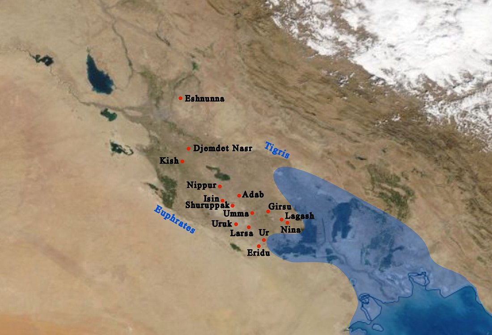
{kind=link}
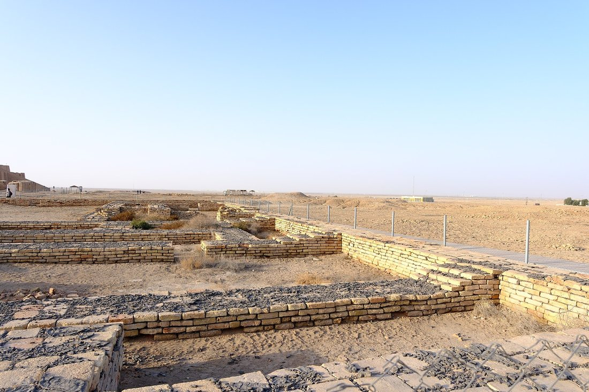
{kind=link}
2. Ficha Técnica
| Campo | Dados |
|---|---|
| Nome | Suméria (Šumeru em acádio; ki-en-ĝir em sumério) |
| Período | c. 4000 a.C. – 1750 a.C. |
| Região | Sul da Mesopotâmia (atual Iraque e Kuwait) |
| Rios | Tigre e Eufrates |
| Períodos principais | Ubaide (6500-4000 a.C.), Uruk (4000-3100 a.C.), Dinástico Antigo (2900-2334 a.C.), Acádio (2334-2112 a.C.), Guti (2112-2004 a.C.), Ur III / Renascimento Sumério (2112-2004 a.C.) |
| Cidade principal | Uruk (maior e mais poderosa); também Eridu, Ur, Kish, Lagash, Nippur, Girsu, Umma, Adab |
| Língua | Sumério (língua isolada, não semítica nem indo-europeia) |
| Escrita | Cuneiforme (primeira forma de escrita, c. 3600-3500 a.C.) |
| Governo | Cidades-Estado monárquicas (ensi e lugal); império centralizado sob Ur III |
| Religião | politeísmo antropomórfico; deuses principais: An (céu), Enlil (ar/vento), Enki (águas/sabedoria), Inanna (amor/guerra), Nanna (lua), Utu (sol) |
| Legado | Escrita cuneiforme, roda, irrigação, código legal, epopeia literária, divisão do tempo (60/60), arquitetura monumental (zigurates) |
| Declínio | Invasões gutis (c. 2198 a.C.), elamitas e amoritas (c. 1750 a.C.); absorção pela Babilônia |
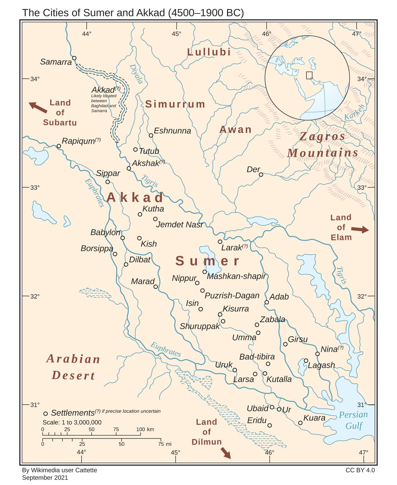
{kind=link}
3. Contexto Histórico e Cronologia
3.1 Período Ubaide (c. 6500-4000 a.C.)
Os primeiros habitantes da Suméria não eram sumérios, mas um povo de origem desconhecida identificado pelo sítio de Tell al-Ubaid. Os ubaidianos introduziram a agricultura irrigada, a cerâmica pintada, tijolos de argila e estatuetas características (Adams 1981, p.58; Pollock 1999, p.28). Escavações em Eridu, Ur e Uruk revelaram templos de tijolo crus que evoluíram para plataformas monumentais — precursoras dos zigurates.
3.2 Período Uruk (c. 4000-3100 a.C.)
O período Uruk testemunhou a urbanização explosiva da Mesopotâmia. Uruk cresceu de um vilarejo para uma metrópole de 40-80 mil habitantes dentro de muralhas de 9,5 km de extensão — provavelmente a maior cidade do mundo em 2800 a.C. (Algaze 2008, p.132). Foi nesse período que surgiram a roda (c. 3500 a.C.), o torno de cerâmica, o barco a vela e a escrita pictográfica primitiva — inicialmente usada para registros administrativos (tabletas de contas), depois para textos literários e jurídicos (Nissen 1988, p.72-75).
3.3 Período Dinástico Antigo (c. 2900-2334 a.C.)
O período Dinástico Antigo viu a consolidação das cidades-Estado sob monarquias hereditárias. O termo ensi (rei-sacerdote) deu lugar ao lugal ("homem grande"), indicando a secularização do poder. Cidades como Kish, Uruk, Ur, Lagash e Umma competiam por terras aráveis e direitos hídricos — frequentemente registrados em inscrições de fronteira (Cooper 1983). A Primeira Dinastia de Lagash (c. 2500 a.C.), sob Eannatum, estabeleceu o primeiro império regional conhecido, controlando a maior parte da Suméria e partes do Elam (Kramer 1963, p.50).
3.4 Império Acádio (c. 2334-2112 a.C.)
Sargão de Acádia (Šarru-kīnu), de origem semita, conquistou as cidades sumérias e fundou o primeiro império multinacional da história. Sua filha, Enheduana (En-hedu-ana), alta sacerdotisa de Nanna em Ur, é a primeira autora literária conhecida pelo nome — autora dos Hinos do Templo de Nanna e A Exaltação de Inanna (Leick 1994, p.85-92). O império acádio promoveu o acádio como língua administrativa, embora o sumérico continuasse como língua literária e religiosa.
3.5 Período Guti (c. 2112-2004 a.C.)
Os gutis, povo montanhês do atual Irã, invadiram a Mesopotâmia após o colapso acádio. Fontes sumérias os descrevem como "pessoas sem normas, sem instrução" — possivelmente refletindo preconceito cultural. Pesquisadores modernos atribuem o colapso também a mudanças climáticas e secas prolongadas (Weiss 2012, p.149-156). O período guti é considerado uma "idade das trevas" na historiografia suméria.
3.6 Renascimento Sumério / Terceira Dinastia de Ur (c. 2112-2004 a.C.)
Sob Ur-Nammu e seu filho Shulgi, a Suméria experimentou um renascimento cultural e político. Ur-Nammu promulgou o Código de Ur-Nammu — o código legal mais antigo conhecido, precedendo o Código de Hamurabi em c. 300 anos (Kramer 1981, p.78-80). Shulgi reformou a administração, padronizou pesos e medidas, estabeleceu escolas (edubbas) e promoveu a literatura suméria. O império Ur III desabou c. 2004 a.C. sob invasões elamitas e amoritas.
3.7 Período Isim-Larsa (c. 2004-1750 a.C.)
Após a queda de Ur, o poder fragmentou-se entre as dinastias de Isin e Larsa. A cultura suméria persistiu, mas o sumério gradualmente deixou de ser falado como língua viva, sobrevivendo como língua litúrgica e acadêmica — como o latim na Europa medieval. C. 1750 a.C., o rei babilônico Hamurabi conquistou a Suméria, encerrando a civilização suméria como entidade política independente (Kramer 1963, p.300-315).
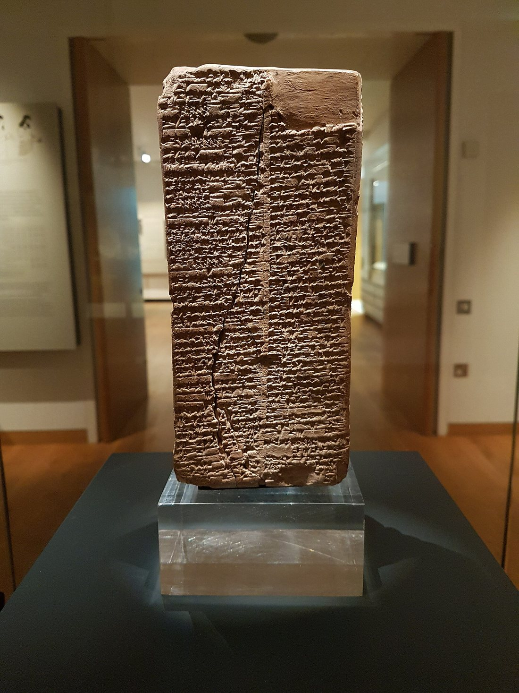
{kind=link}
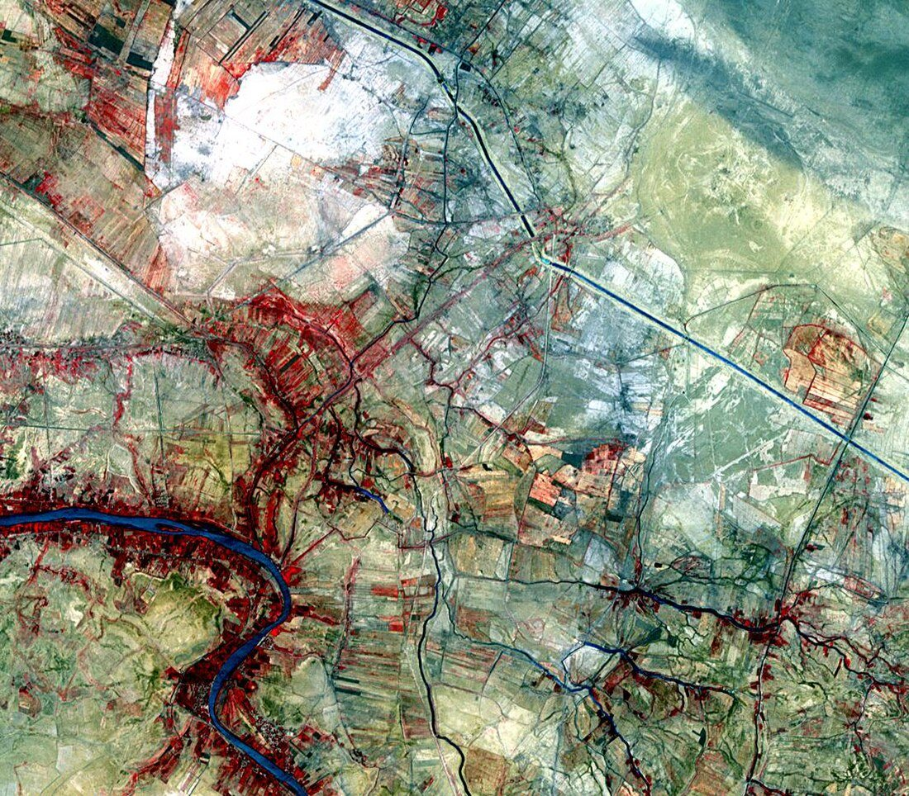
{kind=link}
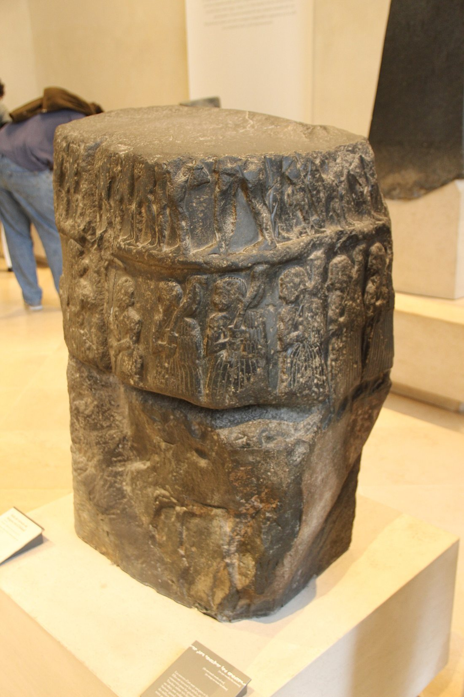
{kind=link}
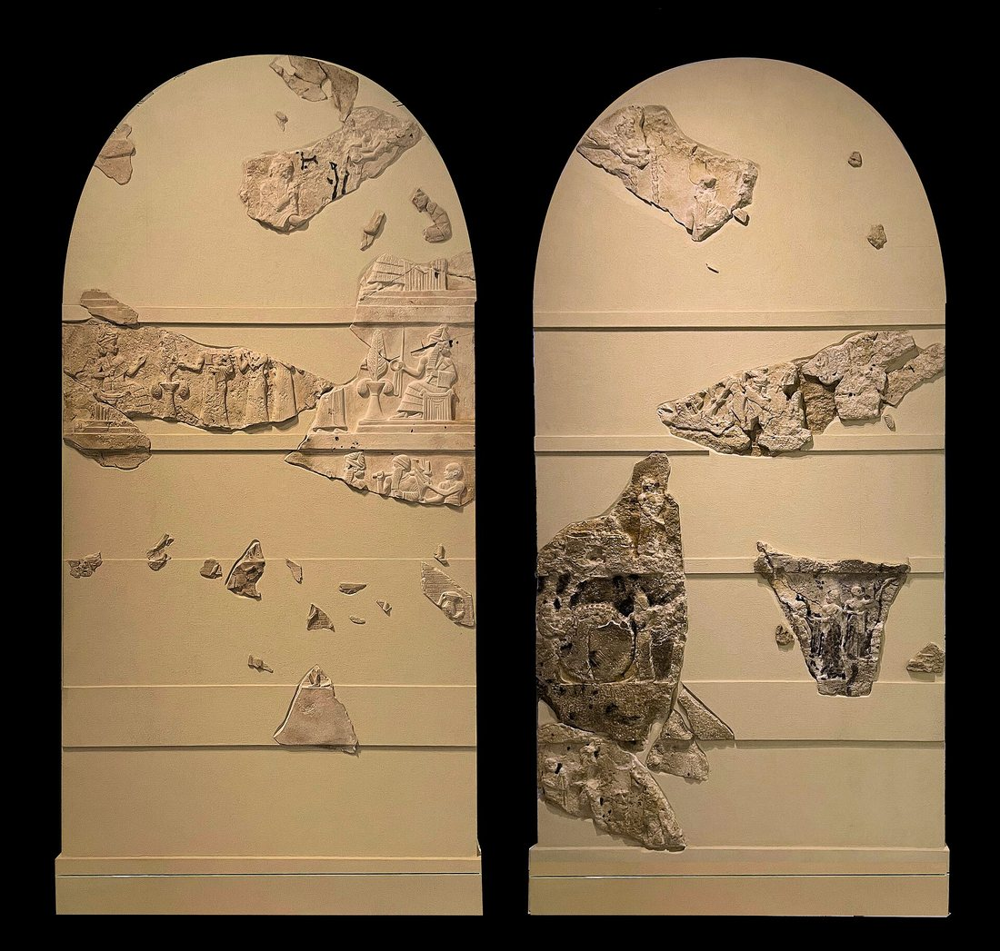
{kind=link}
4. As Cidades-Estado Sumérias
4.1 Uruk (Unug) — A Primeira Cidade
Uruk foi a maior e mais poderosa cidade suméria. Em seu apogeu (c. 2800 a.C.), abrigava entre 40.000 e 80.000 habitantes dentro de muralhas de 9,5 km. Os templos de Eana (dedicado a Anu) e o Templo de Inanna (o "Templo Branco") exibiam arquitetura monumental com mosaicos de cones de argila colorida (Nissen 1988, p.98-105). A Epopeia de Gilgamesh celebra Uruk como a cidade de muralhas construídas por sete conselheiros, com seus "jardins e pomares" e "os templos de Ishtar".
Link direto: Fachada do Templo de Inanna de Uruk no Museu do Iraque — World History Encyclopedia, imagem 10276
4.2 Eridu — A Cidade Primordial
Eridu era considerada a primeira cidade do mundo pela tradição suméria — fundada por Enki, deus da sabedoria e das águas. O mito de Enki estabelecendo Eridu do mar primordial serviu como paradigma para todas as cidades mesopotâmicas (Leick 2001, p.1-15). Escavações em Eridu (Tell Abu Shahrein) revelaram 18 níveis de templos sobrepostos, desde simples santuários ubaidianos até zigurates monumentais.
4.3 Ur — O Grande Zigurate
Ur tornou-se a capital do império sob a Terceira Dinastia. Seu zigurate — dedicado a Nanna/Sin, deus da lua — foi reconstruído por Nabucodonosor II no século VI a.C. e permanece parcialmente preservado em Tell el-Muqayyar, Iraque. O Cemitério Real de Ur (escavado por Woolley em 1922-1934) revelou tumbas reais com artefatos de ouro, lápis-lazuli e prata — incluindo as famosas Liras de Ur.
Link direto: Penn Museum — Liras de Ur
4.4 Kish — A Primeira Realidade Política
Kish é a primeira cidade mencionada na Lista de Reis Sumérios como receptora da realeza divina. O rei Etana de Kish é descrito como "aquele que estabilizou todas as terras" — figura lendária que ascendeu aos céus nas costas de uma águia (Kramer 1963, p.43). A Primeira Dinastia de Kish dominou a região c. 2800-2500 a.C.
4.5 Lagash — O Império de Eannatum
Lagash, sob Eannatum (c. 2450 a.C.), estabeleceu o primeiro império regional sumério. A Estela dos Abutres — registrando a vitória de Eannatum sobre Umma — é um dos documentos iconográficos mais importantes da história antiga. O governador posterior Gudea (c. 2144-2124 a.C.) é conhecido por suas estátuas de diorita representando-o com plantas arquitetônicas — símbolo do governante-construtor.
4.6 Nippur — O Centro Religioso
Nippur nunca foi capital política, mas funcionou como centro religioso de toda a Mesopotâmia — sede do templo de Enlil, deus supremo do panteão sumério. O Ekur ("templo da montanha") em Nippur era o local onde Enlil decretava os me — as leis divinas que governavam o cosmos (Kramer 1963, p.82-87).
4.7 Girsu (Tello) — Capital de Lagash
Girsu (atual Tello) foi a capital de Lagash e um dos maiores sítios arqueológicos da Mesopotâmia. Escavações francesas revelaram milhares de tabletes cuneiformes, incluindo os arquivos do palácio de Gudea. Recentemente, escavações holandesas em Girsu dataram sistemas de canais antigos usando C-14, revelando a sofisticação da engenharia hidráulica suméria (Egberts et al. 2023, p.979-1002).
4.8 Outras cidades
- Adab — centro administrativo importante no período Dinástico Antigo
- Umma — rival histórica de Lagash por direitos de água (documentado na Estela dos Abutres)
- Sippar — centro de culto solar; local do "Jardim dos Deuses" mencionado em mitos
- Bad-tibira — cidade associada aos primeiros reis na Lista de Reis
- Shuruppak — cidade associada ao mito do dilúvio (Utnapishtim/Atrahasis)
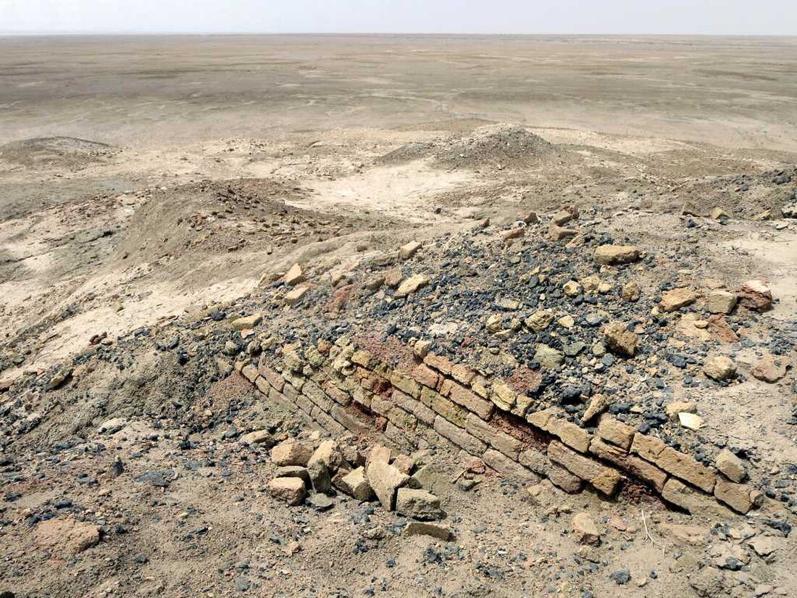
{kind=link}
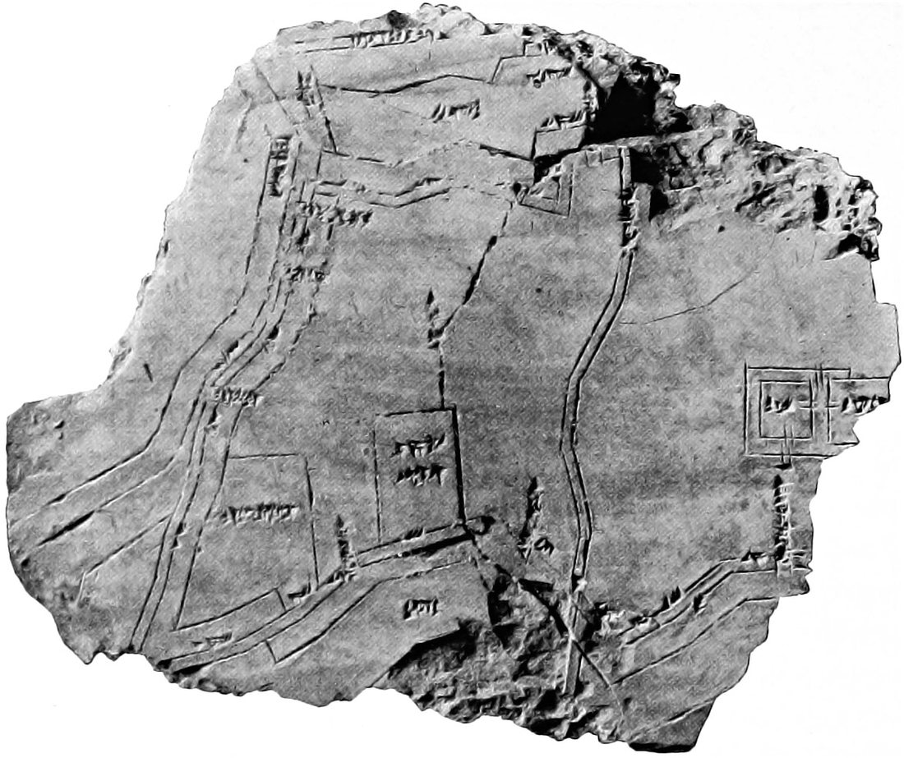
{kind=link}
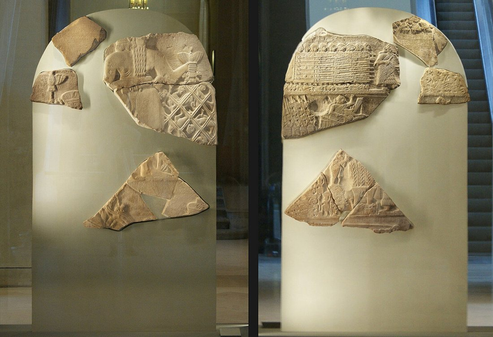
{kind=link}
5. A Escrita Cuneiforme
5.1 Origem e Desenvolvimento
A escrita cuneiforme surgiu em Uruk c. 3600-3500 a.C. como sistema pictográfico para registros administrativos. As primeiras tabletas — encontradas em grande quantidade no nível IV de Uruk — registram transações comerciais: grãos, gado, escravos (Nissen 1988, p.65-72). Os pictogramas evoluíram para sinais abstratos em forma de cunha (cuneus = cunha em latim), produzidos com estiletes de junco em tabletas de argila úmida.
5.2 Tipos Textuais
O corpus cuneiforme abrange mais de 500.000 tabletas catalogadas, abrangendo:
- Administração: recibos, contratos, inventários, correspondência
- Jurídico: códigos de leis (Ur-Nammu, Lipit-Ishtar, Hamurabi), processos, testamentos
- Literatura: mitos, épicos, hinos, lamentações, provérbios, textos de sabedoria
- Científico: matemática, astronomia, medicina, zoologia, mineralogia
- Lexicografia: listas de palavras, glossários, enciclopédias escolares
- Religioso: rituais, oráculos, encantamentos, textos funerários
5.3 O Sistema Numérico
Os sumérios desenvolveram um sistema sexagesimal (base 60) — legado que persiste na divisão do tempo (60 segundos, 60 minutos) e na geometria (360 graus). Eles também usavam o sistema duodecimal (base 12) para contagem de objetos. Tabletas matemáticas de Susa e Shuruppak demonstram conhecimento de equações quadráticas, raízes cúbicas e cálculos de área c. 2000 a.C. (Høyrup 2002).
5.4 A Decifração
O cuneiforme foi decifrado no século XIX por Henry Rawlinson, Georg Friedrich Grotefend e outros. Rawlinson copiou a Inscrição de Behistun (c. 520 a.C.) — trilingue em persa antigo, acádio e elamita — possibilitando a decifração do sistema (Walker 1998). George Smith, um gravador autodidata, decifrou o Episódio do Dilúvio na Epopeia de Gilgamesh em 1872 — evento que revolucionou os estudos bíblicos e orientais (Damrosch 2007).
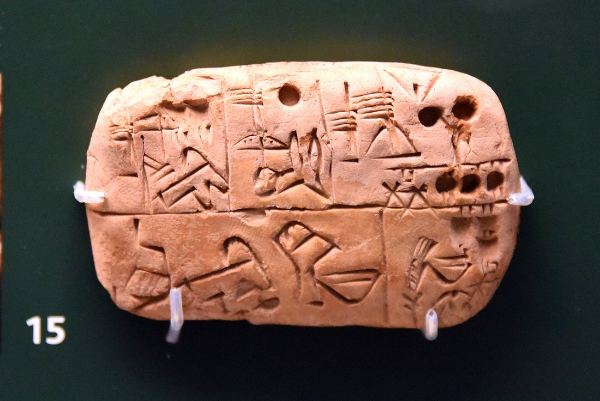
{kind=link}
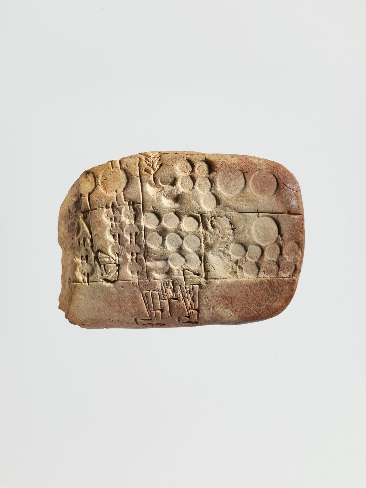
{kind=link}
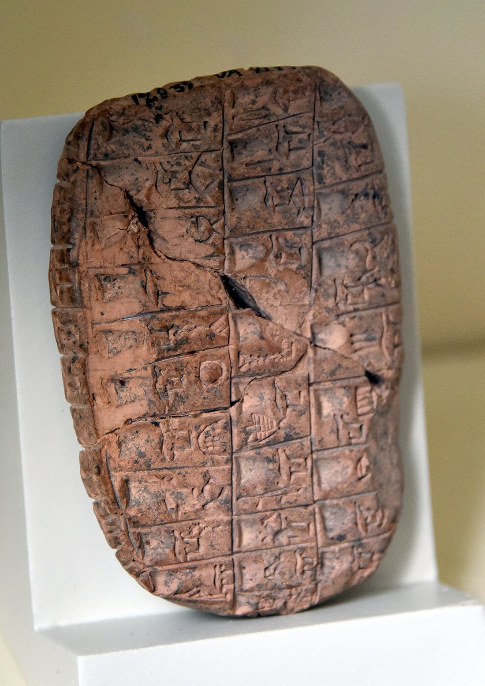
{kind=link}
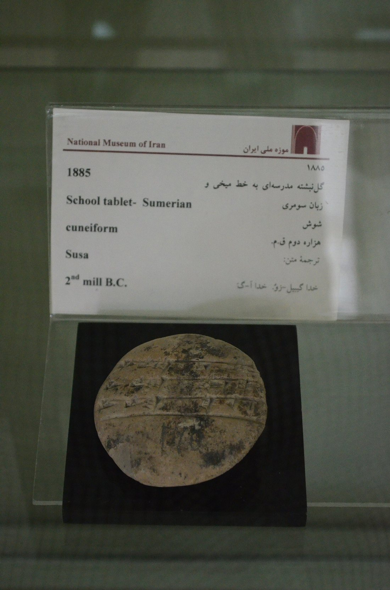
{kind=link}
6. Religião e Mitologia
6.1 O Panteão Sumério
A religião suméria era politeísta, com deuses antropomórficos associados a forças naturais e funções cósmicas. O panteão era estruturado hierarquicamente:
| Deus | Esfera | Símbolo | Cidade |
|---|---|---|---|
| An(u) | Céu, realeza | Estrela/corneta | Uruk |
| Enlil | Ar, vento, realeza terrestre | Coroa com chifres | Nippur |
| Enki (Ea) | Águas doces, sabedoria, artes | Cabra-peixe, rios correntes | Eridu |
| Inanna (Ishtar) | Amor, guerra, fertilidade | Estrela de 8 pontas, leão | Uruk |
| Nanna (Sin) | Lua, tempo, fertilidade | Crescente, touro | Ur |
| Utu (Shamash) | Sol, justiça | Disco alado, serpente | Larsa/Sippar |
| Ninhursag | Terra, maternidade | útero de vaca | Kes |
| Dumuzi (Tammuz) | Vegetação, pastores | Pastores, cabras | Bad-tibira |
6.2 Mitos Fundantes
A Criação: Segundo o Eridu Genesis e o Mito de Enki e Ninmah, os deuses criaram os humanos do barro para cultivar a terra e realizar os trabalhos que os deuses não queriam fazer. Enki e Ninmul moldaram a humanidade em parceria (Kramer 1963, p.108-115).
O Dilúvio: O Mito de Atrahasis (c. 1700 a.C.) e a Epopeia de Gilgamesh (Tábua XI) narram um dilúvio enviado pelos deuses para destruir a humanidade. O herói Atrahasis/Utnapishtim constrói uma arca e sobrevive — paralelo claro ao dilúvio bíblico de Noé (Lambert & Millard 1969).
A Descida de Inanna: O mito de Inanna descendo ao submundo (kur) e sendo morta por sua irmã Ereshkigal simboliza o ciclo vegetativo — morte e renovação. O texto é uma das obras-primas da literatura suméria (Wolkstein & Kramer 1983).
Enki e a Ordem do Mundo: No mito Enki e a Ordem do Mundo, Enki estabelece os me — as leis divinas que governam a civilização: realeza, artes, comércio, agriculdade, etc. Os me são guardados em Eridu até que Inanna os rouba e os leva a Uruk — explicando a supremacia de Uruk sobre Eridu (Leick 2001, p.20-25).
6.3 Rituais e Práticas
A religião suméria centrava-se no templo (é), onde estátuas de culto recebiam oferendas diárias: comida, bebida, incenso. Sacerdéis (sanga, en, nindra) mantinham os calendários litúrgicos. Festivais importantes incluíam o Ano Novo (Akitu), celebrado em março/abril, marcando a renovação cósmica (Mark 2026).
6.4 O Submundo (Kur)
Os sumérios concebiam o submundo como uma escura caverna subterrânea — o "país de onde não se retorno" (kur-nu-gi-a). Todos os mortos, justos ou ímpios, habitavam o kur em condições sombrias, alimentando-se de barro e poeira. Não havia conceito de recompensa ou punção pós-morte (Bottéro 2001, p.263-270).
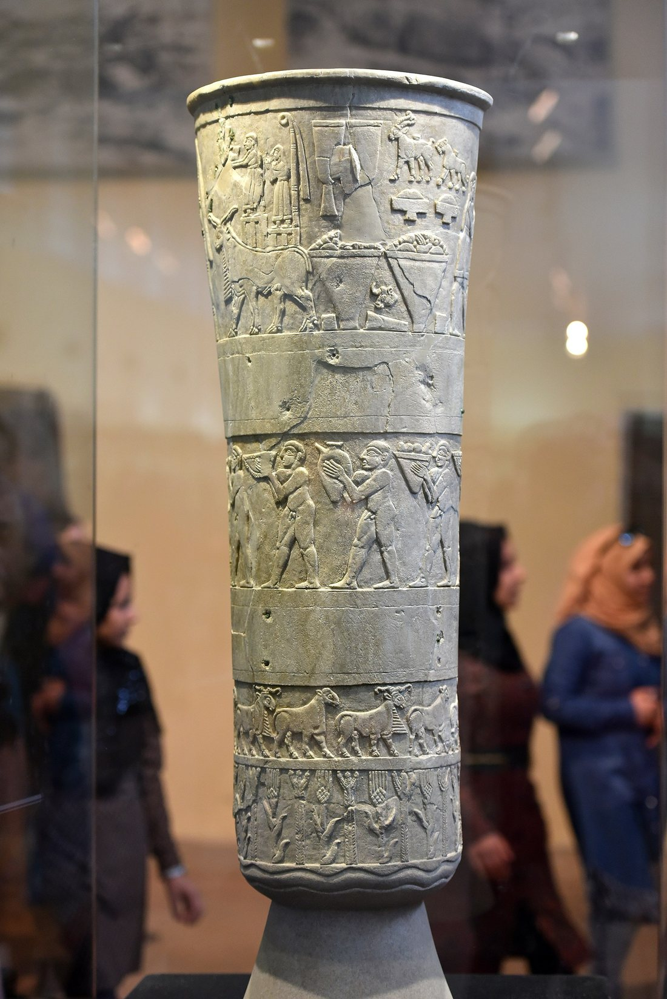
{kind=link}
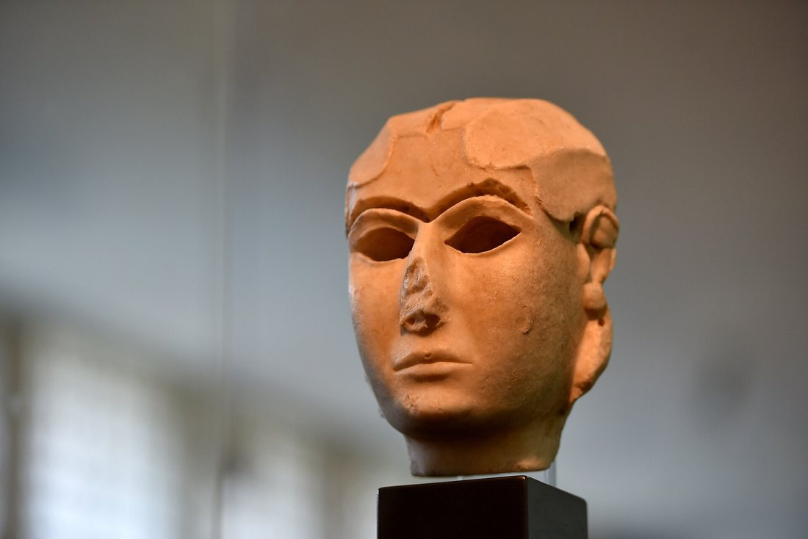
{kind=link}
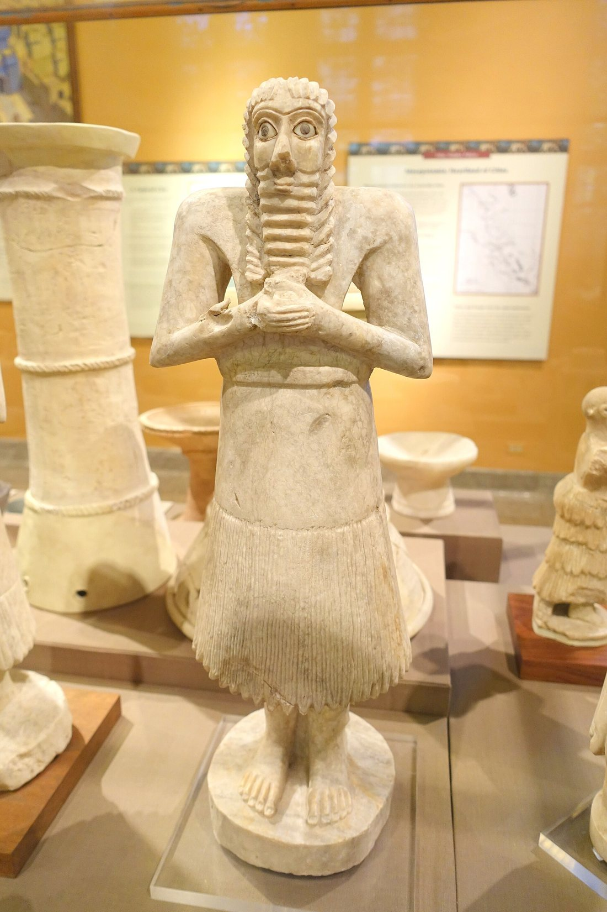
{kind=link}
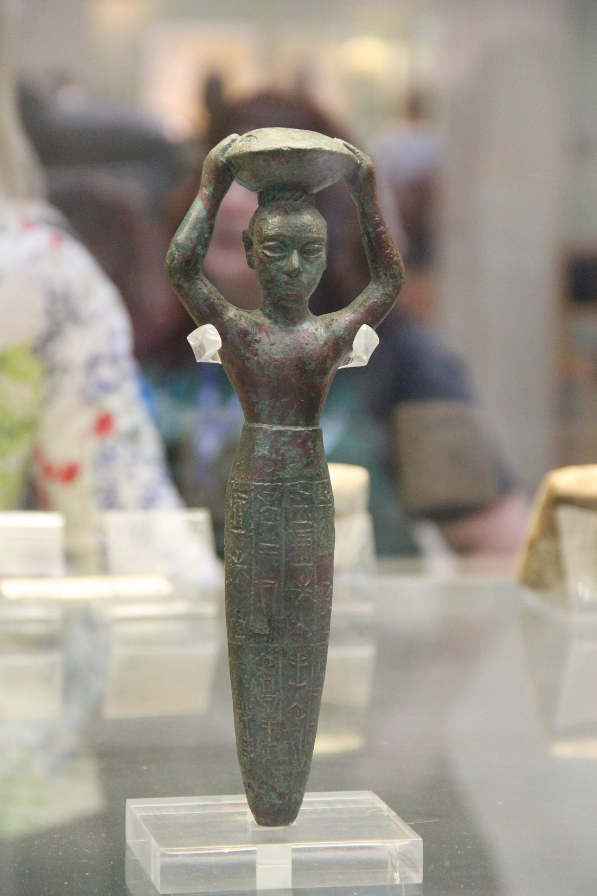
{kind=link}
7. Sociedade e Economia
7.1 Estratificação Social
A sociedade suméria era estratificada em: - Elite: realeza, sacerdotes, escribas, comerciantes ricos - Homens livres: agricultores, artesãos, soldados - Escravos: prisioneiros de guerra, devedores, criminalizados — mas com direitos limitados (podiam possuir propriedade, casar com livres)
7.2 Direitos das Mulheres
As mulheres sumérias tinham direitos significativos para o mundo antigo: podiam possuir propriedade, comerciar, testemunhar em juízo e iniciar divórcio. Sacerdotisas (entu, naditu) ocupavam posições de destaque — Enheduana é o exemplo mais famoso. A deusa Inanna/Ishtar como divindade suprema do amor e da guerra refletia o status relativamente elevado das mulheres (Wolkstein & Kramer 1983).
7.3 Economia
A economia baseava-se na agricultura irrigada (cevada, trigo, tâmaras, linho), comércio de longa distância (lápis-lazuli do Afeganistão, cedro do Líbano, cobre de Omã) e manufatura (têxteis, cerâmica, metalurgia). Os templos e palácios funcionavam como centros econômicos — redistribuindo bens, mantendo arquivos e financiando obras públicas (Postgate 1992).
7.4 A Educação (Edubba)
As escolas sumérias (edubba = "casa dos tabletes") treinavam escribas em leitura, escrita, matemática, geografia e literatura. O currículo incluía cópias de textos literários, listas de palavras e problemas matemáticos. Tabletas escolares revelam exercícios de alunos — com correções do professor — e revelam um sistema educacional rigoroso (Tinney 2021).
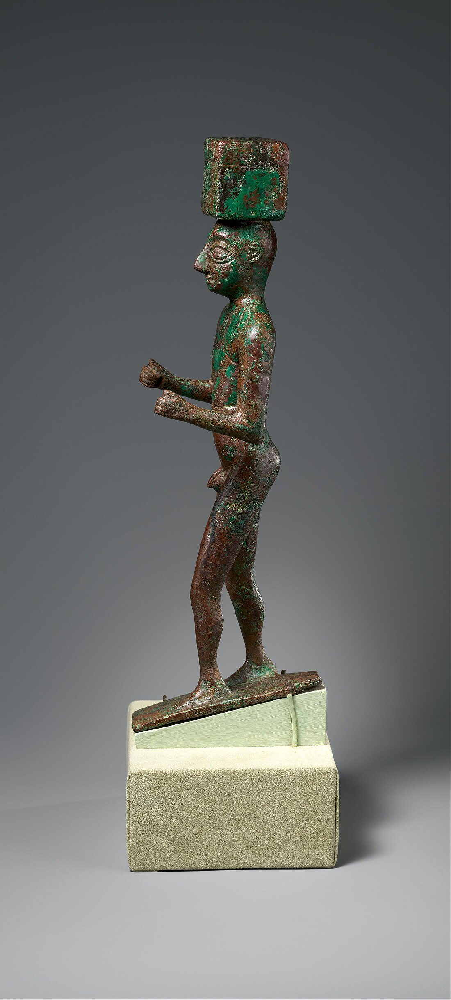
{kind=link}
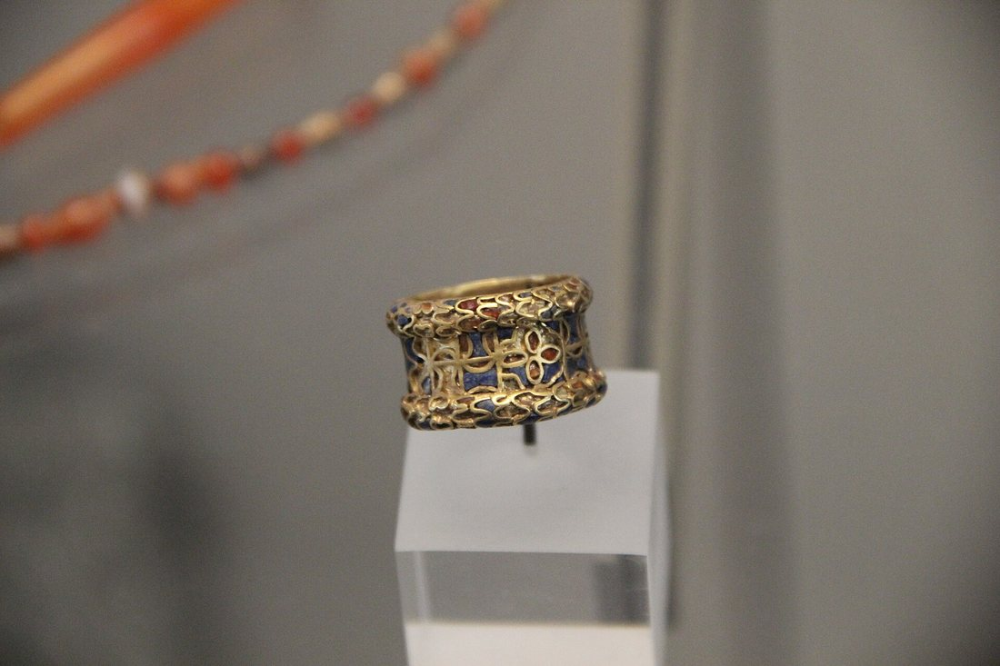
{kind=link}
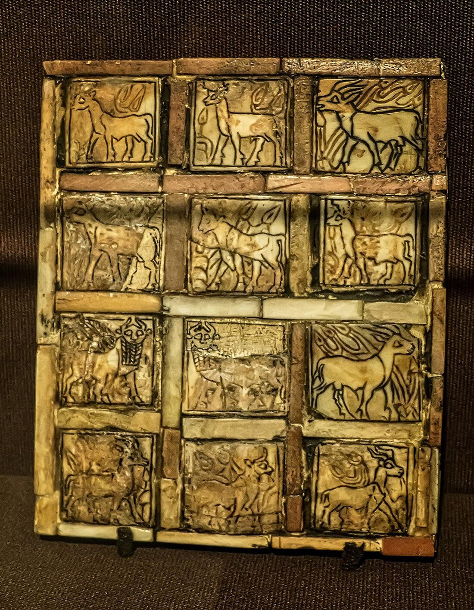
{kind=link}
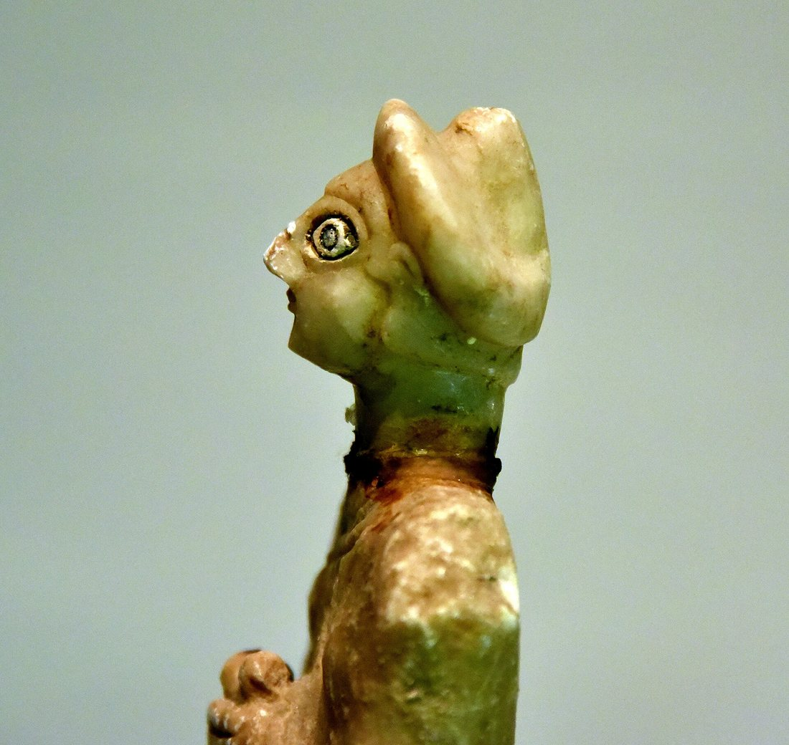
{kind=link}
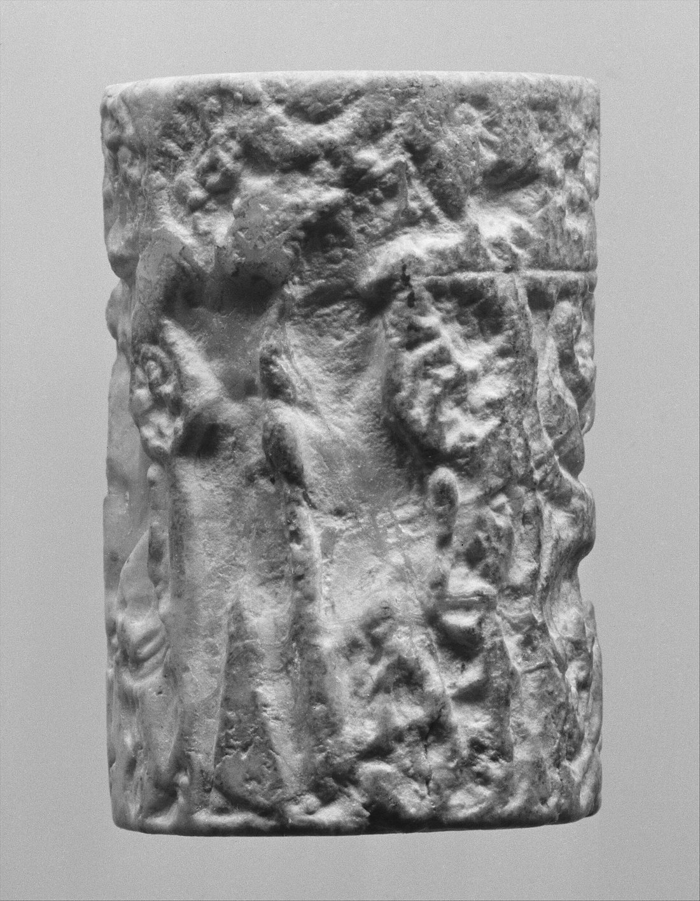
{kind=link}
8. Personagens e Figuras
8.1 Gilgamesh — O Rei-Herói
Gilgamesh, rei lendário de Uruk, é o protagonista da Epopeia de Gilgamesh — a mais antiga obra literária conhecida (c. 2100-1400 a.C.). A epopeia narra sua busca pela imortalidade após a morte de seu amigo Enkidu, culminando no encontro com Utnapishtim, sobrevivente do dilúvio. Temas: amizade, mortalidade, o significado da vida civilizada (George 2003).
8.2 Enheduana — A Primeira Autora
Enheduana (c. 2300 a.C.), filha de Sargão de Acádia, foi alta sacerdotessa (entu) de Nanna em Ur. É a primeira autora literária conhecida pelo nome — autora de A Exaltação de Inanna (42 hinos) e dos Hinos do Templo. Sua obra estabeleceu o modelo para a literatura devocional mesopotâmica e, possivelmente, para os salmos bíblicos (Leick 1994, p.85-92; Meador 2000).
8.3 Sargão de Acádia — O Primeiro Imperador
Sargão I (c. 2334-2279 a.C.), fundador do Império Acádio, é uma figura semilendária. A Lenda de Sargão narra que foi abandonado no Eufrates em um cesto de junco, criado por um jardineiro, e eventualmente tornou-se copeiro do rei de Kish antes de conquistar o poder. Seu império uniu sumérios e acádios sob uma única administração — modelo para todos os impérios subsequentes (Liverani 2014).
8.4 Ur-Nammu — O Legislador
Ur-Nammu (c. 2112-2094 a.C.), fundador da Terceira Dinastia de Ur, promulgou o Código de Ur-Nammu — o código legal mais antigo preservado. Diferente do posterior Código de Hamurabi, o código de Ur-Nammu era compensatório (multas financeiras) em vez de puro ("olho por olho"). Exemplo: "Se um homem cometeu um corte no pé de outro homem, ele deverá pagar 10 shekels de prata" (Kramer 1981, p.78-80).
8.5 Gudea — O Governante-Construtor
Gudea (c. 2144-2124 a.C.), governante de Lagash, é conhecido por suas estátuas de diorita (27 sobrevivem) representando-o com plantas arquitetônicas e tabletes. Ele reconstruiu o templo de Ningirsu — e suas inscrições detalham a importação de cedro do Líbano e jade do deserto iraniano (Edzard 1997).
8.6 Shulgi — O Rei-Escritor
Shulgi (c. 2094-2046 a.C.), filho de Ur-Nammu, reinou por 48 anos. Promoveu a educação, padronizou o calendário e os pesos, e provavelmente compôs ou patrocinou hinos autobiográficos. O Shulgi Hino B celebra suas realizações: "Eu, Shulgi, o rei poderoso, de todos os países, sou o primeiro entre todos os reis" (Klein 1981).
8.7 Etana — O Rei que Subiu ao Céu
Etana de Kish é o primeiro rei mencionado na Lista de Reis Sumérios — descrito como "aquele que estabilizou todas as terras". O Mito de Etana narra sua ascensão ao céu nas costas de uma águia para obter o "nascimento de plantas" e produzir um herdeiro (Kramer 1963, p.43-46).
8.8 Kubaba — A Única Rainha
Kubaba (c. 2500 a.C.) é a única mulher listada na Lista de Reis Sumérios como governante de Kish. Sua inclusão — após quatro dinastias masculinas — sugere que mulheres podiam governar em circunstâncias excepcionais. A Lista a menciona brevemente: "Kubaba, a padeira, cujos firmamentos foram estabelecidos" (Bottéro 2001, p.272).
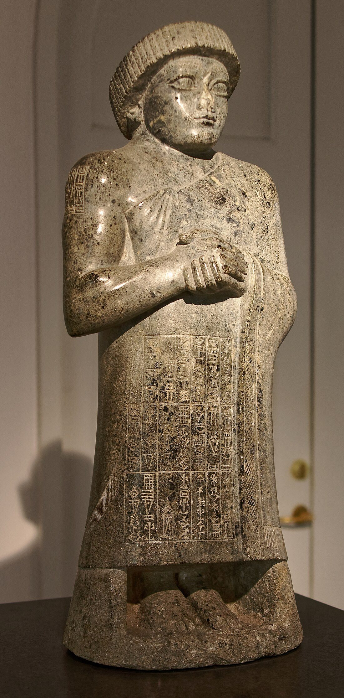
{kind=link}
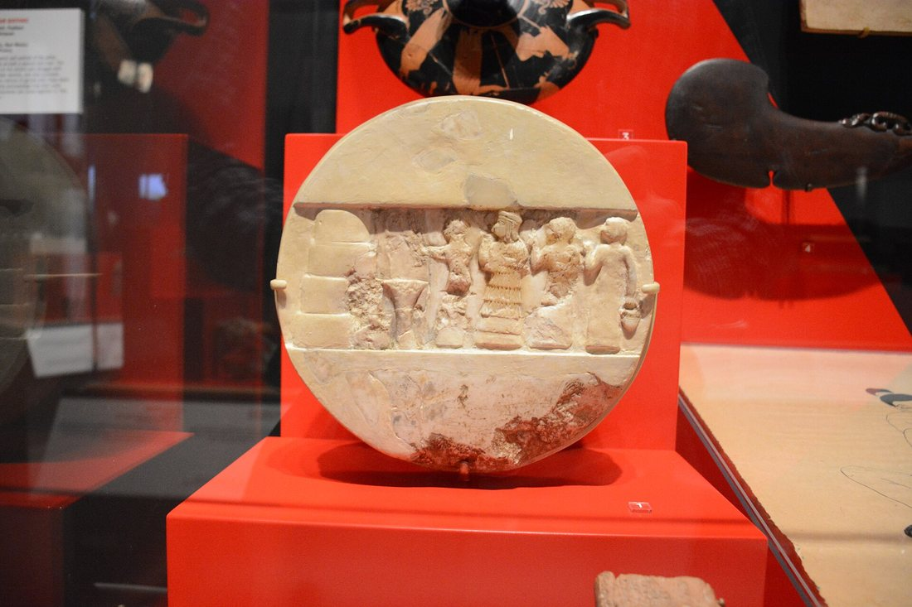
{kind=link}
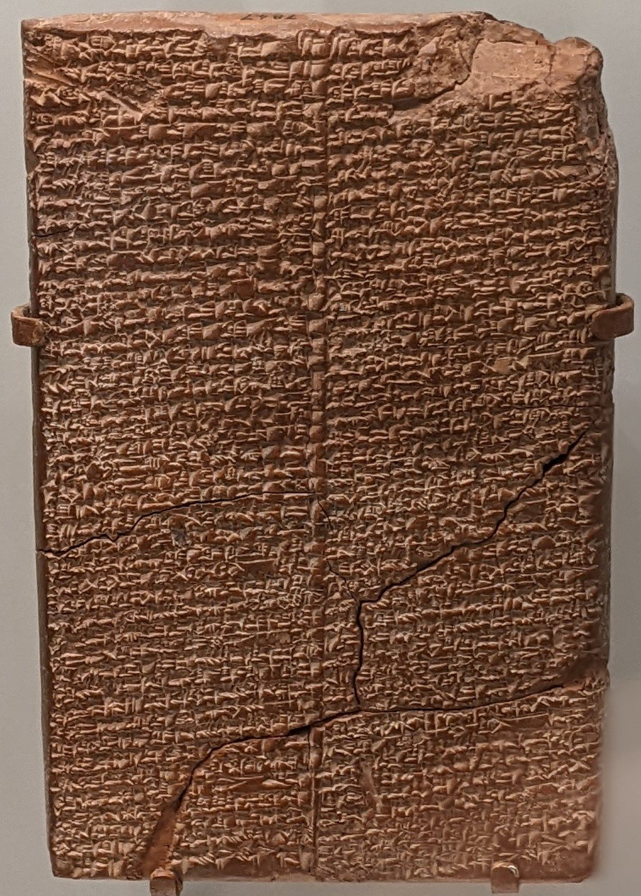
{kind=link}
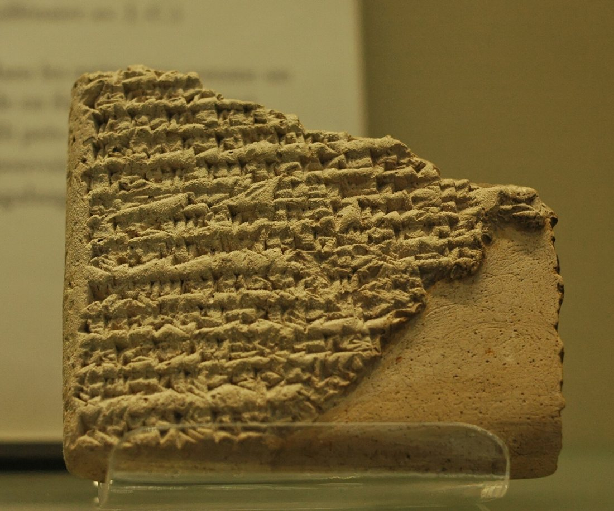
{kind=link}
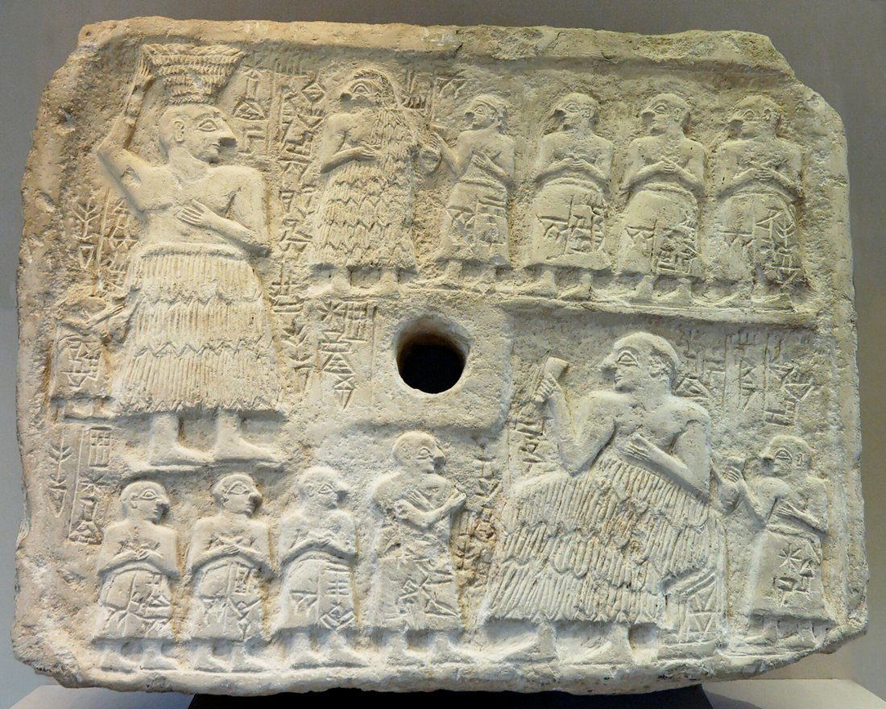
{kind=link}
9. A Epopeia de Gilgamesh
9.1 Estrutura e Conteúdo
A Epopeia de Gilgamesh é um poema de cerca de 3.000 versos em 12 tabletas, composto c. 2100-1400 a.C. (versão "padrão" babilônica). A história:
- Tábua I-II: Gilgamesh, rei tirânico de Uruk, oprime seu povo. Os deuses criam Enkidu — um selvagem — para equilibrá-lo. Enkidu é civilizado pela prostituta do templo Shamhat e desafia Gilgamesh.
- Tábua III-V: Gilgamesh e Enkidu tornam-se amigos e viajam ao Cedro, onde derrotam Humbaba, o guardião da floresta.
- Tábua VI: A deusa Inanna/Ishtar propõe casamento a Gilgamesh, que a rejeita. Ela envia o Touro do Céu; Gilgamesh e Enkidu o matam.
- Tábua VII-VIII: Os deuses decidem que Enkidu deve morrer. Sua morte devasta Gilgamesh.
- Tábua IX-XI: Gilgamesh, confrontado com a mortalidade, viaja em busca de Utnapishtim — o sobrevivente do dilúvio que recebeu imortalidade. Utnapishtim conta a história do dilúvio e desilus Gilgamesh sobre a imortalidade.
- Tábua XII: Gilgamesh retorna a Uruk, aceitando sua mortalidade. Ele olha para suas muralhas e encontra consolo na obra de suas mãos.
9.2 Temas
- Amizade: A relação Gilgamesh-Enkidu transforma ambos — da brutalidade à civilização.
- Mortalidade: A consciência da morte é o motor da busca — e a aceitação é a resolução.
- Civilização vs. Natureza: Enkidu é "domesticado" pelo sexo e pela civilização; a epopeia celebra a vida civilizada.
- O Dilúvio: Paralelo ao dilúvio bíblico de Noé; Utnapishtim = Noé mesopotâmico.
9.3 Edições e Traduções
- George, Andrew R. The Epic of Gilgamesh: A New Translation. Penguin Classics, 1999. ISBN 978-0140447214.
- George, Andrew R. The Babylonian Gilgamesh Epic: Introduction, Critical Edition and Cuneiform Texts. 2 vols. Oxford University Press, 2003. ISBN 978-0198149224.
- Sandars, N.K. The Epic of Gilgamesh. Penguin Classics, 1960 (rev. 1972).
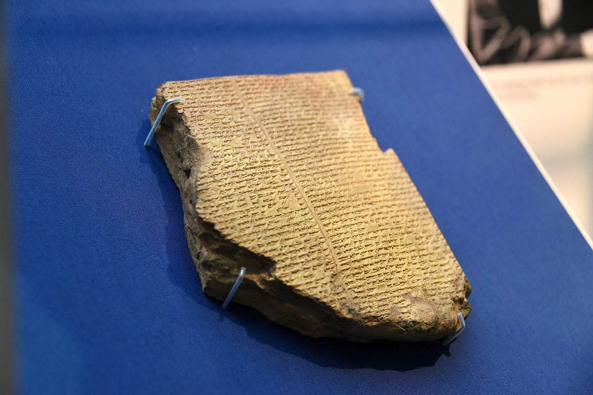
{kind=link}
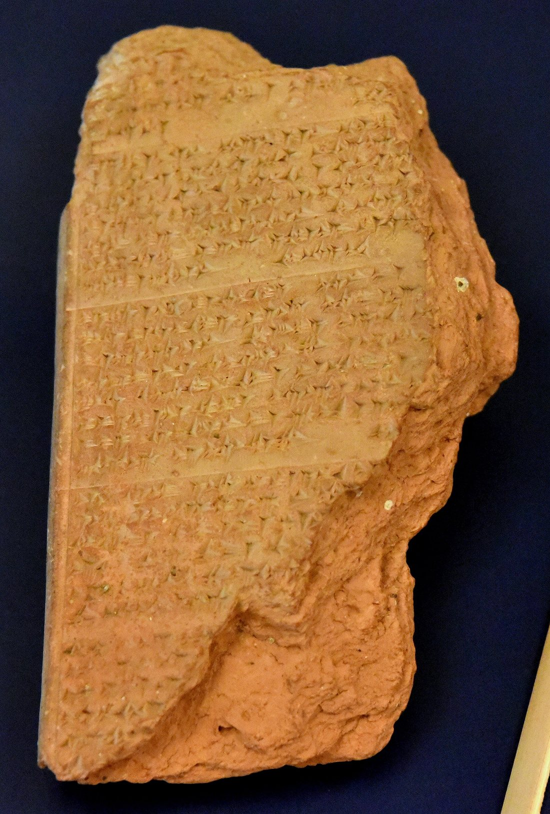
{kind=link}
10. A Música e os Instrumentos Sumérios
10.1 As Liras de Ur
A descoberta mais importante para a história da música suméria foi a escavação do Cemitério Real de Ur (c. 2600-2400 a.C.) por Leonard Woolley (1922-1934). Entre as tumbas reais, foram encontrados 11 instrumentos de corda:
- 2 harpas — incluindo a "Harpa de Puabi" (British Museum 1929-1017-2)
- 9 liras — incluindo a famosa "Lira de Cabeça de Touro" (Penn Museum B17694A) e a "Lira de Prata" (British Museum 12119)
Os instrumentos originais — de madeira — deterioraram-se, mas as decorações de ouro, prata, lápis-lazuli e madrepérola permitiram reconstruções precisas. As liras tinham de 9 a 13 cordas e cabeças de touro estilizadas em ouro e lápis-lazuli (Kilmer 1998, p.12-20).
Links diretos: - Penn Museum — Bull-Headed Lyre - British Museum — Silver Lyre of Ur
10.2 A Música na Mesopotâmia
A música mesopotâmica era parte integrante da vida religiosa, palaciana e cotidiana. Textos cuneiformes descrevem:
- Instrumentos: harpas (algars), liras (zamzam), flautas (tigi), tambores (ub), címbalos (sim), alaúdes (naz)
- Performers: músicos profissionais (nar), cantores, instrumentistas
- Gêneros: hinos (shir), lamentations (gisi), canções de amor, canções de trabalho
- Teoria: escalas heptatônicas com 7 modos, intervalos de quartas e quintas, notação musical (Kilmer 1998, p.25-30)
10.3 O Sistema Musical
Tabletas de Nippur e Ur revelam que os mesopotâmios desenvolveram um sistema musical sofisticado:
- 7 escalas (equivalentes às escalas gregas dórica, frígia, lídia, etc.)
- Terminologia técnica para intervalos, dedilhado e afinação
- Notação musical rudimentar em tabletas de Ugarit (c. 1400 a.C.)
- Afinação heptatônica diatônica — equivalente à escala maior moderna (Kilmer 1998, p.28)
10.4 O Canto dos Cantores: Hurrian Hymn No. 6
O Hino Hurrita No. 6 (c. 1400 a.C.) é a peça musical mais antiga notada — encontrada em Ugarit (Síria). Composto para lira e canto, é um hino a Nikkal, deusa da lua. A notação foi decifrada por Anne Draffkorn Kilmer e o hino foi reconstruído por Peter Pringle e Michael Levy (Duchesne-Guillemin 1981, p.292-295).
Link: YouTube — Hurrian Hymn No. 6, Peter Pringle
10.5 CDs e Reconstruções Modernas
| Álbum | Artista | Descrição | Fonte |
|---|---|---|---|
| Ancient Lyre Strings | Michael Levy | Reconstruções de músicas sumérias e babilônicas em lira autêntica | Apple Music |
| The Epic of Gilgamesh | Peter Pringle | Recitação musical da Epopeia em lira réplica do Ur | YouTube |
| The Silver Lyre | Peter Pringle | Música suméria na réplica da Lira de Prata de Ur | YouTube |
| Lyre Ensemble | Oriental Institute | Podcast em vídeo: recriações musicais com a Lira de Ouro do Ur | YouTube |
10.6 A Estela Musical de Gudea
A Estela Musical de Gudea (c. 2100 a.C., Louvre AO52) representa uma cerimônia de inauguração de templo com dois instrumentos: um tambor gigante e um par de címbalos. Textos administrativos contemporâneos referem-se aos címbalos como sim — instrumentos de cobre usados em pares, pesando menos de 1 kg cada (Gabbay 2015).
Link: Louvre — Estela Musical de Gudea (Domínio Público)
{kind=link}
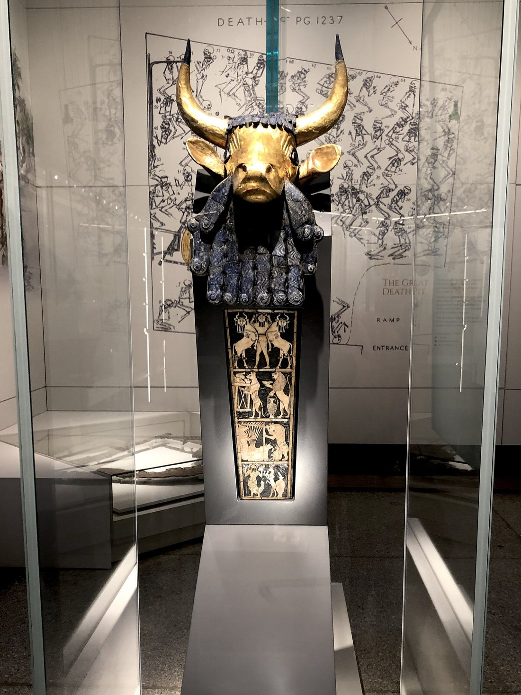
{kind=link}
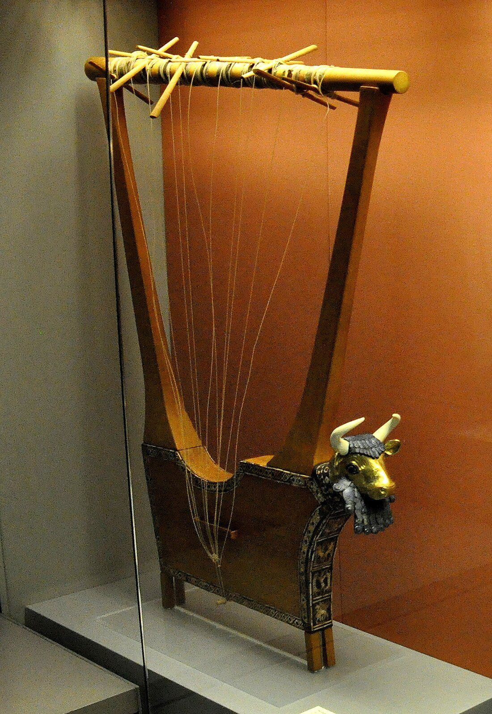
{kind=link}
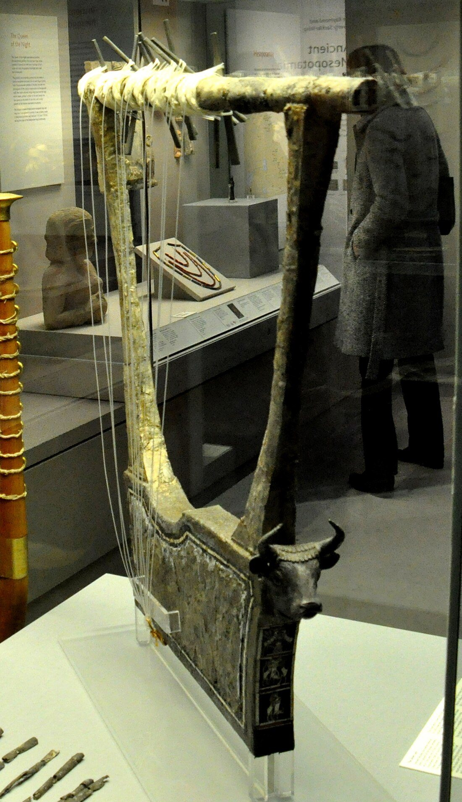
{kind=link}
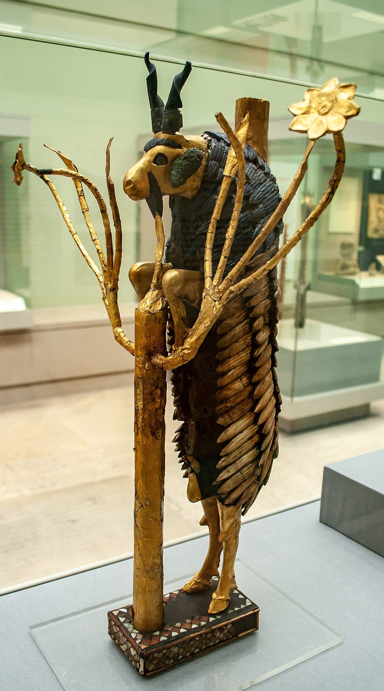
{kind=link}
11. Arte e Arquitetura
11.1 A Padronagem das Cilindricas
Os selos cilíndricos sumérios — pequenos cilindros esculpidos em pedra, rolados sobre argila para produzir imagens em relevo — são a forma de arte mais característica da Mesopotâmia. Cenas comuns incluem: banquetes, caçadas, mitos, guerra e apresentação perante deuses. O Penn Museum possui mais de 30.000 selos cilíndricos — a maior coleção do mundo (Collon 1987).
Link direto: Penn Museum — Cylinder Seals
11.2 O Estandarte de Ur
O Estandarte de Ur (c. 2600 a.C., British Museum 1928-1010-3) é uma caixa de madeira incrustada com mosaicos de concha, lápis-lazuli e calcária vermelha. Representa cenas de guerra e paz — incluindo um tocador de lira e um cantor. É um dos artefatos mais icônicos da arte suméria.
Link direto: British Museum — The Standard of Ur
11.3 As Estátuas Votivas
Estátuas de gesso de Tell Asmar (c. 2700 a.C., Oriental Institute A12332) representam homens e mulheres em pose de reverência perante os deuses. Os olhos enormes — incrustados com lápis-lazuli — simbolizam atenção perpétua ao divino. Um grupo dessas estátuas foi encontrado enterrado no Templo de Abu — possivelmente removidas durante reformas e ritualmente "aposentadas".
Link direto: Oriental Institute — Sumerian Statuette
11.4 Arquitetura Monumental
- Zigurates: Plataformas escalonadas de tijolo servindo como base para templos. O Zigarate de Ur (c. 2100 a.C.) tinha 3 níveis e 64m de altura original.
- Templos: O Templo Branco de Uruk (c. 3200 a.C.) com suas colunas decoradas de mosaicos de argila colorida é o templo monumental mais antigo preservado.
- Palácios: O Palácio de Mari (c. 2000 a.C.) com mais de 260 cômodos e 20.000 tabletas.
11.5 Joalheria
As tumbas reais de Ur revelaram joalheria sofisticada: diademas de ouro, colares de lápis-lazuli e ouro, brincos e alfinetes. A "Coroa de Puabi" — composta por milhares de contas de ouro e lápis-lazuli — rivaliza com qualquer joalheria do mundo antigo (Woolley 1934).
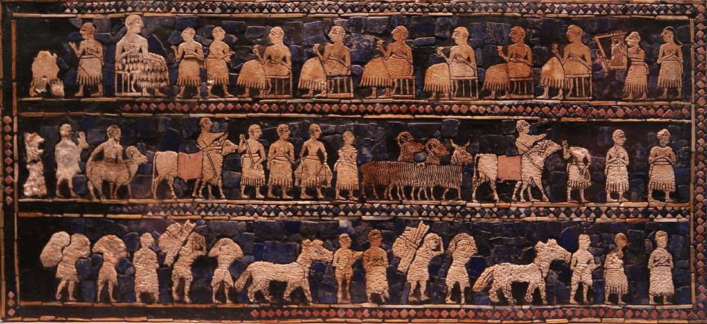
{kind=link}
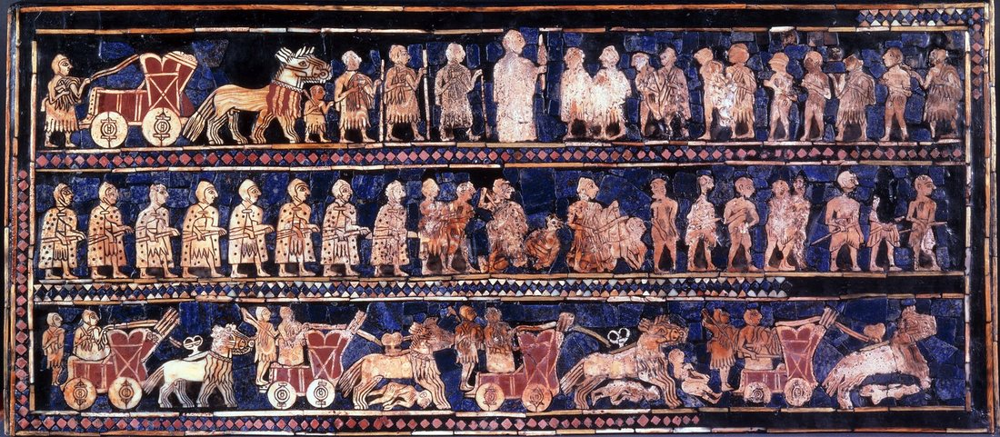
{kind=link}
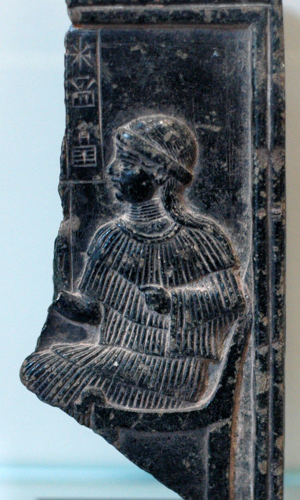
{kind=link}
12. Bibliografia Comentada
12.1 Obras Gerais (Verificadas)
[V-OL] Kramer, Samuel Noah. 1963. The Sumerians: Their History, Culture, and Character. Chicago: University of Chicago Press. ISBN 978-0226452388.
Obra fundadora dos estudos sumérios. Kramer (1897-1990) passou 50 anos reunindo tabletas de museus de todo o mundo. O livro cobre política, religião, literatura, ciência e vida cotidiana. Disponível no Internet Archive.
[V-OL] Kramer, Samuel Noah. 1981. History Begins at Sumer: Twenty-Seven "Firsts" in Man's Recorded History. 3rd ed. Philadelphia: University of Pennsylvania Press. ISBN 978-0812278189.
Clássico acessível que cataloga as 39 "primeiras vezes" sumérias: escrita, cidades, escolas, código de leis, literatura, medicina, agricultura, etc.
[V-OL] Leick, Gwendolyn. 2001. Mesopotamia: The Invention of the City. London: Penguin Books. ISBN 978-0140265743.
Síntese moderna cobrindo a urbanização mesopotâmica desde os ubaidianos até o império babilônico. Leick é uma das principais autoras contemporâneas de estudos sumérios.
[V-OL] Van De Mieroop, Marc. 2007. A History of the Ancient Near East, ca. 3000-323 BC. 2nd ed. Malden, MA: Blackwell. ISBN 978-1405149112.
Panorama atualizado da história política e cultural da Mesopotâmia. Cobre todos os períodos com equilíbrio entre sumérios, acádios, babilônios e assírios.
[V-OL] Bottéro, Jean. 2001. Everyday Life in Ancient Mesopotamia. Edinburgh: Edinburgh University Press; Baltimore: Johns Hopkins University Press. ISBN 978-0748613881.
Tradução de La Mésopotamie (1995). Bottéro (1914-2007) é um dos maiores assiriologistas franceses. Obra cobre religião, vida cotidiana, economia, literatura e mentalidade.
[V-OL] Crawford, Harriet. 2004. Sumer and the Sumerians. 2nd ed. Cambridge: Cambridge University Press. ISBN 978-0521533387.
Introdução arqueológica à Suméria, cobrindo desde os ubaidianos até a queda de Ur. Destaca a importância da arqueologia para complementar as fontes textuais.
[V-OL] Nissen, Hans J. 1988. The Early History of the Ancient Near East, 9000-2000 B.C. Chicago: University of Chicago Press. ISBN 978-0226586586.
Estudo detalhado do período formativo, desde a agricultura até a formação das cidades. Nissen liderou escavações em Uruk e é referência obrigatória.
[V-OL] Postgate, J.N. 1992. Early Mesopotamia: Society and Economy at the Dawn of History. London: Routledge. ISBN 978-0415110322.
Análise da economia e sociedade suméria com base em fontes textuais e arqueológicas. Destaca o papel dos templos como centros econômicos.
12.2 Arqueologia e Urbanização
[V-OL] Adams, Robert McC. 1981. Heartland of Cities: Surveys of Ancient Settlement and Land Use on the Central Floodplain of the Euphrates. Chicago: University of Chicago Press. ISBN 978-0226005441.
Pesquisa de superfície no centro do Eufrates revelando a evolução do assentamento humano desde o Neolítico até o período islâmico. Adams (1926-2018) é referência em arqueologia de paisagem mesopotâmica.
[V-OL] Algaze, Guillermo. 2008. Early Mesopotamia at the Dawn of Civilization: The Evolution of an Urban Landscape. Chicago: University of Chicago Press. ISBN 978-0226013770.
Síntese sobre a urbanização da Mesopotâmia meridional. Algaze demonstra como o comércio de longa distância impulsionou a formação de Uruk e sua esfera de influência.
[V-OL] Pollock, Susan. 1999. Ancient Mesopotamia: The Eden That Never Was. Cambridge: Cambridge University Press. ISBN 978-0521575689.
Revisão crítica da "ideologia da civilização" na historiografia mesopotâmica. Pollock questiona narrativas evolutivas tradicionais.
12.3 Religião e Literatura
[V-OL] Bottéro, Jean. 2001. Religion in Ancient Mesopotamia. Chicago: University of Chicago Press. ISBN 978-0226067178.
Síntese abrangente da religião mesopotâmica por um dos maiores especialistas franceses.
[V-OL] Wolkstein, Diane & Samuel Noah Kramer. 1983. Inanna, Queen of Heaven and Earth: Her Stories and Hymns from Sumer. New York: Harper & Row. ISBN 978-0060908544.
Coletânea de mitos e hinos de Inanna/Ishtar em tradução acessível. Inclui "A Descida de Inanna", "Inanna e o Deus da Sabedoria" e os Hinos do Templo.
[V-OL] George, Andrew R. 2003. The Babylonian Gilgamesh Epic: Introduction, Critical Edition and Cuneiform Texts. 2 vols. Oxford: Oxford University Press. ISBN 978-0198149224.
Edição acadêmica definitiva da Epopeia, com texto cuneiforme, tradução e comentário detalhado.
12.4 Música
[V-OL] Kilmer, Anne Draffkorn. 1998. "The Musical Instruments from Ur and Ancient Mesopotamian Music." Expedition Magazine 40, no. 2: 12-20.
Estudo seminal sobre as Liras de Ur e o sistema musical mesopotâmico. Leitura completa
[V-OL] Duchesne-Guillemin, Marcelle. 1981. "Music in Ancient Mesopotamian State." Journal of the American Oriental Society 101, no. 3: 292-295.
Análise da notação musical mesopotâmica e do Hino Hurrita No. 6.
[V-OL] Kilmer, Anne Draffkorn. 1971. "The Discovery of an Ancient Mesopotamian Musical Theory." Proceedings of the American Philosophical Society 115, no. 2: 131-149.
Artigo fundacional sobre a teoria musical mesopotâmica reconstruída de tabletes cuneiformes.
13. Blogs e Sites Especializados
13.1 Enciclopédias Online
[SITE] Mark, Joshua J. 2026. "Suméria: O Berço da Civilização." World History Encyclopedia, 18 junho 2026. https://www.worldhistory.org/trans/pt/1-114/sumeria/
Artigo abrangente em português cobrindo cronologia, cidades, religião, declínio. Inclui mapa, imagens e links para artigos relacionados.
[SITE] Mark, Joshua J. 2026. "Os Sumérios: Inventores da Civilização." World History Encyclopedia, 28 janeiro 2026. https://www.worldhistory.org/trans/pt/1-428/os-sumerios/
Versão expandida do artigo anterior, cobrindo os 39 "primeiros" sumérios e o legado civilizacional.
[SITE] "Mesopotânia: O Princípio dos Princípios." World History Encyclopedia. https://www.worldhistory.org/trans/pt/1-34/mesopotamia/
Panorama geral da Mesopotâmia, contextualizando a Suméria dentro da história regional.
13.2 Sites Acadêmicos
[SITE] Kilmer, Anne Draffkorn. 1998. "The Musical Instruments from Ur and Ancient Mesopotamian Music." Expedition Magazine, 40(2). https://www.penn.museum/sites/expedition/the-musical-instruments-from-ur-and-ancient-mesopotamian-music/
Estudo ilustrado sobre os instrumentos musicais do Cemitério Real de Ur, reconstruções e teoria musical. Com imagens de alta resolução dos artefatos.
[SITE] Gabbay, Uri. 2015. "Music in Ancient Mesopotamia." The Ancient Near East Today, 3.10. https://anetoday.org/music-ancient-mesopotamia/
Artigo atualizado sobre fontes arqueológicas, textuais e iconográficas da música mesopotâmica. Inclui imagens do Museu Britânico, Louvre e Penn Museum.
[SITE] Egberts, E., Jotheri, J., Di Michele, A., Baxter, A., & Rey, S. 2023. "Dating ancient canal systems using radiocarbon dating and archaeological evidence at Tello/Girsu, southern Mesopotamia, Iraq." Radiocarbon, 65(4), 979-1002. doi: 10.1017/RDC.2023.40
Estudo recente datando sistemas de canais em Girsu usando C-14, revelando a sofisticação da engenharia hidráulica suméria.
13.3 Português
[SITE] "Suméria." Wikipédia, a enciclopédia livre. https://pt.wikipedia.org/wiki/Sum%C3%A9ria
Artigo enciclopédico em português com cronologia, cidades, religião, língua, cultura e ligações externas.
[SITE] "Sumérios: quem foram, características, legado." Brasil Escola. https://brasilescola.uol.com.br/historiag/sumerios.htm
Artigo introdutório acessível em português, cobrindo principais aspectos da civilização.
[SITE] "Suméria: uma história longínqua." Brasil Escola. https://meuartigo.brasilescola.uol.com.br/historia-geral/sumeria-uma-historia-longinqua.htm
Artigo mais detalhado sobre a sociedade suméria em português.
[SITE] "Os povos que viveram na Mesopotâmia." YouTube. https://www.youtube.com/watch?v=K181UcS7pOE
Vídeo educativo em português sobre os povos da Mesopotâmia, incluindo sumérios.
13.4 Sites de Museus
[SITE] "Highlights from the Collection: Mesopotamia." Oriental Institute Museum, University of Chicago. https://isac.uchicago.edu/collections/highlights/highlights-collection-mesopotamia
Destaques da coleção mesopotâmica do OIM, incluindo figurinhas votivas, placas de harpista, vasos e selos cilíndricos.
[SITE] "Mesopotamia (6000–1500 BC)." The British Museum. https://www.britishmuseum.org/collection/galleries/mesopotamia
Galeria virtual do British Museum com destaques como o Estandarte de Ur e as Liras de Ur.
[SITE] "Mesopotamia, 1000 B.C.–1 A.D." The Metropolitan Museum of Art. https://www.metmuseum.org/toah/ht/04/wam.html
Coleção do MET de artefatos mesopotâmicos, incluindo lamassus e selos cilíndricos.
[SITE] "Mesopotamia: Civilization Begins." Getty Museum. https://www.getty.edu/art/exhibitions/mesopotamia/explore.html
Exposição virtual sobre a Mesopotâmia, cobrindo escrita, arte, religião e vida cotidiana.
14. Vídeos e Canais YouTube
[YT] "The Mysterious Origins of the World's First Civilization." YouTube. https://www.youtube.com/watch?v=gS1SATHia6o
Documentário sobre as origens da civilização suméria e as inovações que mudaram o mundo.
[YT] "Ancient Mesopotamia Part 1: The Sumerians (4100 – 1750 BCE)." Professor Dave Explains. https://www.youtube.com/watch?v=q8tn2BBDovg
Aula completa sobre a história suméria, cobrindo cronologia, cidades, religião e legado.
[YT] "Mesopotamia - The Sumerians." Best Documentary. https://www.youtube.com/watch?v=OmNsBk29PsA
Documentário de 42 minutos sobre a civilização suméria.
[YT] "Mesopotamia: Civilization Begins (with Beer)." Getty Museum. https://www.youtube.com/watch?v=t4PVVVNr620
Palestra no Getty Museum sobre a Mesopotâmia, incluindo a produção de cerveja pelos sumérios.
[YT] "Prof. Eagan talks Mesopotamian Civilization." YouTube. https://www.youtube.com/watch?v=1xiOay7OFAM
Aula universitária sobre a civilização mesopotâmica.
[YT] "The Lyre Ensemble, OI Video Podcast, Part 1." Oriental Institute. https://www.youtube.com/watch?v=CimbNIhc70E
Podcast em vídeo sobre a recriação da Lira de Ouro do Ur e a música mesopotâmica. Com reconstruções musicais.
[YT] "Sumerian Art Explained | Art History Lecture." YouTube. https://www.youtube.com/watch?v=3zewgfMJUwc
Aula de história da arte sobre a arte suméria, cobrindo escultura, arquitetura e ourivesaria.
[YT] "Lament For GILGAMESH, The Gold Lyre Of Ur." Peter Pringle. https://www.youtube.com/watch?v=dDRD3c-WAec
Performance musical da Epopeia de Gilgamesh em lira réplica do Ur.
[YT] "What Did the Lyre of Ur Actually Sound Like?" Facebook/Gilgamesh Foundation. https://www.facebook.com/gilgamesh.foundation/videos/what-did-the-lyre-of-ur-actually-sound-like/2076965589732340/
Recriação musical do som da Lira de Ur.
[YT] "Sumerian vs Babylonian ancient languages explained." YouTube. https://www.youtube.com/watch?v=QyB80GwPFaQ
Explicação linguística das línguas suméria e acádia.
[YT] "Aula 10 - Traduzindo a Antiga Suméria." Babel Poética e Literária. https://www.youtube.com/watch?v=EsuSXr0gK74
Aula em português sobre a tradução literária do sumério para o português do Brasil.
15. CDs e Música de Época
A música suméria reconstruída é um campo ativo. Os CDs abaixo apresentam performances em réplicas autênticas dos instrumentos do Cemitério Real de Ur:
| Álbum / Artista | Descrição | Fontes |
|---|---|---|
| Peter Pringle — The Epic of Gilgamesh | Recitação musical da Epopeia em lira réplica do Ur (9 cordas). Inclui "The Sumerian Silver Lyre" e "Lament for Gilgamesh". | Apple Music · YouTube |
| Michael Levy — Ancient Lyre Strings | Performances em lira autêntica de músicas sumérias e babilônicas. Levy é especialista em instrumentos de corda antigos. | Apple Music · Bandcamp |
| The Lyre Ensemble — Oriental Institute Podcast | Recriações musicais com a Lira de Ouro do Ur reconstruída por Andy Lowings. Discussão acautemica sobre a recriação. | YouTube |
| Duo 4500-year-old reproduction lyre & pipes | Dueto entre a lira réplica de Ur e as flautas de prata reconstruídas do mesmo túmulo. | YouTube |
| Peter Pringle — Hurrian Hymn No. 6 | Performance do hino musical mais antigo do mundo (c. 1400 a.C.) em lira. | YouTube |
Instrumentação validada: As liras e harpas são réplicas baseadas nos instrumentos do Cemitério Real de Ur (Penn Museum, British Museum). As flautas são réplicas das flautas de prata encontradas no mesmo complexo funerário. A teoria musical mesopotâmica é reconstruída a partir de tabletes cuneiformes de Nippur e Ur estudados por Anne Draffkorn Kilmer (Kilmer 1998; Duchesne-Guillemin 1981).
16. Guia de Estudo
16.1 Pré-requisitos
- Noções básicas de geografia do Oriente Médio (rios Tigre e Eufrates, Crescente Fértil)
- Conceitos básicos de cronologia (a.C., períodos arqueológicos)
- Familiaridade com conceitos de civilização, urbanização e Estado
16.2 Escada de Estudo
| Degrau | Recurso | Tempo estimado |
|---|---|---|
| 1. Textos primários | Leitura da Epopeia de Gilgamesh (George 2003) e hinos de Enheduana | 2-3 semanas |
| 2. Visão geral | World History Encyclopedia (Mark 2026) + artigos do Penn Museum | 1 semana |
| 3. Manuais introdutórios | Kramer 1981 (History Begins at Sumer); Crawford 2004 (Sumer and the Sumerians) | 2-3 semanas |
| 4. Monografias específicas | Adams 1981 (Heartland of Cities); Algaze 2008 (Early Mesopotamia); Leick 2001 (Mesopotamia) | 3-4 semanas |
| 5. Artigos acadêmicos | Kilmer 1998; Gabbay 2015; Egberts et al. 2023 | 2-3 semanas |
| 6. Fontes primárias em tradução | Internet Archive (Kramer 1963); ETCSL (Electronic Text Corpus of Sumerian Literature) | Contínuo |
| 7. Discussão acadêmica atual | Bottéro 2001; Pollock 1999; Van De Mieroop 2007 | 2-3 semanas |
16.3 Recursos por Nível
Iniciante: WHE, Brasil Escola, History.com, vídeos do YouTube Intermediário: Kramer 1981, Crawford 2004, Leick 2001 Avançado: Kramer 1963, George 2003, Adams 1981, artigos em Radiocarbon e Expedition
16.4 Perguntas para Reflexão
- Por que a Suméria é considerada o "berço da civilização"? Quais critérios definem uma "civilização" e a Suméria os atende?
- Qual a relação entre irrigação, urbanização e formação do Estado na Suméria?
- Como a religião suméria reflete e justifica a estrutura social e política?
- Qual a importância da escrita para o desenvolvimento da civilização suméria?
- Como a música funcionava na sociedade suméria e o que as reconstruções modernas revelam?
- Por que a Suméria declinou? Fatores internos (esgotamento do solo, conflitos) ou externos (invasões, mudanças climáticas)?
16.5 Glossário Essencial
| Termo | Definição |
|---|---|
| Cuneiforme | Sistema de escrita em forma de cunha, inventado na Suméria c. 3600 a.C. |
| Zigurate | Plataforma escalonada de tijolo servindo como base para templos sumérios. |
| Ensi | Rei-sacerdote; governante de cidade-Estado suméria no período Dinástico Antigo. |
| Lugal | "Homem grande"; governante secular, distinto do ensi sacerdotal. |
| Edubba | "Casa dos tabletes"; escola suméria para treinamento de escribas. |
| Me | Leis divinas que governam o cosmos, estabelecidas por Enki. |
| Kur | Submundo sumérico; "país de onde não se retorna". |
| Enheduana | Primeira autora literária conhecida pelo nome (c. 2300 a.C.). |
| Sargão | Fundador do Império Acádio (c. 2334-2279 a.C.). |
| Ur-Nammu | Fundador da Terceira Dinastia de Ur; autor do código legal mais antigo. |
| Atrahasis | Herói do mito sumério do dilúvio (equivalente a Noé). |
| Etana | Primeiro rei mencionado na Lista de Reis Sumérios. |
| Kubaba | Única mulher listada como governante na Lista de Reis. |
| Estandarte de Ur | Artefato icônico com cenas de guerra e paz em mosaico. |
| Liras de Ur | Instrumentos de corda encontrados no Cemitério Real (c. 2600 a.C.). |
17. Notas e Referências
- Mark, Joshua J. 2026. "Suméria: O Berço da Civilização." World History Encyclopedia, 18 junho 2026. https://www.worldhistory.org/trans/pt/1-114/sumeria/
- Kramer, Samuel Noah. 1963. The Sumerians: Their History, Culture, and Character. Chicago: University of Chicago Press. ISBN 978-0226452388. Internet Archive
- Kramer, Samuel Noah. 1981. History Begins at Sumer. 3rd ed. Philadelphia: University of Pennsylvania Press. ISBN 978-0812278189.
- Leick, Gwendolyn. 2001. Mesopotamia: The Invention of the City. London: Penguin. ISBN 978-0140265743.
- Adams, Robert McC. 1981. Heartland of Cities. Chicago: University of Chicago Press. ISBN 978-0226005441.
- Algaze, Guillermo. 2008. Early Mesopotamia at the Dawn of Civilization. Chicago: University of Chicago Press. ISBN 978-0226013770.
- Van De Mieroop, Marc. 2007. A History of the Ancient Near East, ca. 3000-323 BC. 2nd ed. Malden, MA: Blackwell. ISBN 978-1405149112.
- Bottéro, Jean. 2001. Everyday Life in Ancient Mesopotamia. Edinburgh University Press. ISBN 978-0748613881.
- Bottéro, Jean. 2001. Religion in Ancient Mesopotamia. Chicago: University of Chicago Press. ISBN 978-0226067178.
- Crawford, Harriet. 2004. Sumer and the Sumerians. 2nd ed. Cambridge University Press. ISBN 978-0521533387.
- Nissen, Hans J. 1988. The Early History of the Ancient Near East, 9000-2000 B.C. Chicago: University of Chicago Press. ISBN 978-0226586586.
- Postgate, J.N. 1992. Early Mesopotamia: Society and Economy at the Dawn of History. London: Routledge. ISBN 978-0415110322.
- Pollock, Susan. 1999. Ancient Mesopotamia: The Eden That Never Was. Cambridge University Press. ISBN 978-0521575689.
- George, Andrew R. 2003. The Babylonian Gilgamesh Epic. 2 vols. Oxford University Press. ISBN 978-0198149224.
- Wolkstein, Diane & Samuel Noah Kramer. 1983. Inanna, Queen of Heaven and Earth. Harper & Row. ISBN 978-0060908544.
- Kilmer, Anne Draffkorn. 1998. "The Musical Instruments from Ur and Ancient Mesopotamian Music." Expedition 40(2): 12-20. https://www.penn.museum/sites/expedition/the-musical-instruments-from-ur-and-ancient-mesopotamian-music/
- Gabbay, Uri. 2015. "Music in Ancient Mesopotamia." ANE Today 3.10. https://anetoday.org/music-ancient-mesopotamia/
- Duchesne-Guillemin, Marcelle. 1981. "Music in Ancient Mesopotamian State." J. Amer. Oriental Soc. 101(3): 292-295.
- Kilmer, Anne Draffkorn. 1971. "The Discovery of an Ancient Mesopotamian Musical Theory." Proc. Amer. Philos. Soc. 115(2): 131-149.
- Leick, Gwendolyn. 1994. Sex and Eroticism in Mesopotamian Literature. London: Routledge. ISBN 978-04150653397.
- Meador, Betty De Shong. 2000. Inanna, Lady of Largest Heart: Poems of the Sumerian High Priestess Enheduanna. Austin: University of Texas Press. ISBN 978-0292752424.
- Cooper, Jerrold S. 1983. The Curse of Agade. Baltimore: Johns Hopkins University Press. ISBN 978-0801828431.
- Liverani, Mario. 2014. The Ancient Near East: History, Society and Economy. London: Routledge. ISBN 978-0415679060.
- Edzard, Dietz Otto. 1997. Gudea and His Dynasty. Toronto: University of Toronto Press. ISBN 978-0802041876.
- Klein, Jacob. 1981. The Royal Hymns of Shulgi King of Ur. Philadelphia: American Philosophical Society.
- Høyrup, Jens. 2002. Lengths, Widths, Surfaces: A Portrait of Old Babylonian Algebra and Its Kin. New York: Springer. ISBN 978-0387953005.
- Walker, C.B.F. 1998. "Cuneiform." In Reading the Past: Ancient Writing from Cuneiform to the Alphabet, ed. J.T. Hooker, 15-73. Berkeley: University of California Press.
- Damrosch, David. 2007. The Buried Book: The Loss and Rediscovery of the Great Epic of Gilgamesh. New York: Henry Holt. ISBN 978-0805080292.
- Weiss, Harvey. 2012. "Quantifying Collapse: The Late Third Millennium BC." In The Archaeology of Climate Change, ed. S. Van de Noort, 149-156. Oxford University Press.
- Tinney, Steve. 2021. "Tablets and Tablet Practices." In The Oxford Handbook of Cuneiform Culture, 576-595. Oxford: Oxford University Press.
18. Figuras com Licença
Todas as figuras deste dossiê têm obra, acervo e licença conferidos na API do Wikimedia Commons no momento do download (ver dossies/sumeria/figuras.json e dossies/sumeria/baixar_figuras.py). Nada entra por atribuição de memória. Só entram licenças que permitem reuso — domínio público/CC0 (LIVRE) e CC BY/CC BY-SA (ATRIBUICAO, com crédito ao autor).
| Fig. | Obra | Acervo | Autor / data | Licença | Origem |
|---|---|---|---|---|---|
| 1 | A planície aluvial vista do espaço | NASA (imagem de satélite); sobreposição de पाटलिपुत्र | NASA Overlay: पाटलिपुत्र / — | Public domain | Commons |
| 2 | O zigurate de Ur, hoje | — | Alli Khalil / — | CC BY-SA 4.0 | Commons |
| 3 | Mapa de Sumer e Acádia | Mapa de Cattette, sobre dados Natural Earth e GSHHG | Cattette / — | CC BY 4.0 | Commons |
| 4 | A Lista Real Suméria | — | Gts-tg / — | CC BY-SA 4.0 | Commons |
| 5 | Uruk vista do espaço | NASA/METI/AIST/Japan Space Systems — sensor ASTER | NASA/METI/AIST/Japan Space Systems, and U.S./Japan ASTER Science Team / — | Public domain | Commons |
| 6 | Estela de vitória de Sargão de Acad | Musée du Louvre, Paris; foto de Gary Todd | Gary Todd / — | CC0 | Commons |
| 7 | Estela de Ur-Nammu | — | Onceinawhile / — | CC BY-SA 4.0 | Commons |
| 8 | Os tijolos do zigurate de Eridu | Sítio de Eridu (Tell Abu Shahrain), Iraque; foto de David Stanley | David Stanley / — | CC BY 2.0 | Commons |
| 9 | A planta de Nippur | Explorations in Bible Lands during the 19th Century (1903) | Hermann Vollrat Hilprecht / — | Public domain | Commons |
| 10 | A Estela dos Abutres | Musée du Louvre, Paris; imagem composta de duas fotografias | Background: Kikuyu3 Elements: Eric Gaba ( User:Sting ) Composite: पाटलिपुत्र 10:52, 30 April 2020 (UTC) / — | CC BY-SA 4.0 | Commons |
| 11 | Proto-cuneiforme: lista de rações | British Museum, Londres; foto de Osama Shukir Muhammed Amin | Osama Shukir Muhammed Amin / — | CC BY-SA 4.0 | Commons |
| 12 | Registro da distribuição de cevada e trigo | The Metropolitan Museum of Art, Nova York (Open Access) | — / circa 3100 | CC0 | Commons |
| 13 | Lista lexical: 58 termos para "porco" | Museu Pergamon, Berlim; foto de Osama Shukir Muhammed Amin | Osama Shukir Muhammed Amin / — | CC BY-SA 4.0 | Commons |
| 14 | Tábua escolar de Susa | Museu Nacional do Irã, Teerã (nº 1885); foto de Darafsh | Darafsh / — | CC BY-SA 3.0 | Commons |
| 15 | O Vaso de Warka | Museu do Iraque, Bagdá (IM 19606); foto de Osama Shukir Muhammed Amin | Osama Shukir Muhammed Amin / — | CC BY-SA 4.0 | Commons |
| 16 | A Máscara de Warka | Museu do Iraque, Bagdá (IM 45434); foto de Osama Shukir Muhammed Amin | Osama Shukir Muhammed Amin / — | CC BY-SA 4.0 | Commons |
| 17 | Estátua votiva de Tell Asmar | Oriental Institute Museum, Universidade de Chicago | Daderot / — | CC0 | Commons |
| 18 | Figura de fundação de Ur-Nammu | British Museum, Londres; foto de Gary Todd | Gary Todd / — | CC0 | Commons |
| 19 | Homem carregando uma caixa de oferendas | The Metropolitan Museum of Art, Nova York (Open Access) | Metropolitan Museum of Art / — | CC0 | Commons |
| 20 | Anel de ouro com incrustações | Musée du Louvre, Paris; foto de Gary Todd | Gary Todd / — | CC0 | Commons |
| 21 | Tabuleiro do Cemitério Real de Ur | Penn Museum, Filadélfia; foto de Mary Harrsch | Mary Harrsch / — | CC BY 2.0 | Commons |
| 22 | Cabeça de mulher suméria | Museu de Sulaymaniyah, Iraque; foto de Osama Shukir Muhammed Amin | Osama Shukir Muhammed Amin / — | CC BY-SA 4.0 | Commons |
| 23 | Selo cilíndrico sumério | The Metropolitan Museum of Art, Nova York (Open Access) | — / circa 2500 | CC0 | Commons |
| 24 | Gudea de Lagash | Ny Carlsberg Glyptotek, Copenhague; foto de Jakub Hałun | Jakub Hałun / — | CC BY-SA 4.0 | Commons |
| 25 | O Disco de Enheduana | Penn Museum, Filadélfia (B16665, U.6612) | Mefman00 / — | CC0 | Commons |
| 26 | Cópia do hino de Enheduana | Penn Museum, Filadélfia (CBS 7847) | Masha Stoyanova / — | CC0 | Commons |
| 27 | O nascimento de Sargão | Musée du Louvre, Paris (AO 7673); foto de Marie-Lan Nguyen | — / early 2nd millennium BC | Public domain | Commons |
| 28 | Ur-Nanshe de Lagash | Musée du Louvre, Paris (AO 2344); foto de Marie-Lan Nguyen | Marie-Lan Nguyen / 2006 | Public domain | Commons |
| 29 | A tabuleta do dilúvio (Gilgamesh XI) | British Museum, Londres; foto de Osama Shukir Muhammed Amin | Osama Shukir Muhammed Amin / — | CC BY-SA 4.0 | Commons |
| 30 | Gilgamesh em Hattusa | Neues Museum, Berlim (VAT 12890); foto de Osama Shukir Muhammed Amin | Osama Shukir Muhammed Amin / — | CC BY-SA 4.0 | Commons |
| 31 | A lira de cabeça de touro de Ur | Penn Museum, Filadélfia; foto de Binxedits | Binxedits / — | CC BY-SA 4.0 | Commons |
| 32 | A lira da rainha | — | Osama Shukir Muhammed Amin / — | CC BY-SA 4.0 | Commons |
| 33 | A lira de prata de Ur | — | Osama Shukir Muhammed Amin / — | CC BY-SA 4.0 | Commons |
| 34 | O carneiro no arbusto | British Museum, Londres; foto de Szilas | — / about 2500 BC (Early Dynastic period III) | CC BY-SA 4.0 | Commons |
| 35 | O Estandarte de Ur: face da paz | British Museum, Londres; foto de LeastCommonAncestor | LeastCommonAncestor / — | CC BY-SA 3.0 | Commons |
| 36 | O Estandarte de Ur: face da guerra | British Museum, Londres | — / circa 2600 | Public domain | Commons |
| 37 | Relevo de Ninsun | Musée du Louvre, Paris (AO 2761); foto de Jastrow | Jastrow / 2006 | Public domain | Commons |
Total: 37 figuras — 16 em domínio público/CC0 (sem obrigação de crédito) e 21 em Creative Commons com atribuição (crédito ao autor indicado na ficha de cada figura).
Figuras conferidas e baixadas em 2026-09-16, em dossies/sumeria/imagens/ (JPEG, largura máxima 1100 px).
19. Links e Recursos
19.1 Acervos Digitais
- Penn Museum — Mesopotamian Collection
- British Museum — Mesopotamia Gallery
- Oriental Institute — Highlights: Mesopotamia
- Metropolitan Museum — Mesopotamia 1000 B.C.–1 A.D.
- Internet Archive — The Sumerians (Kramer 1963)
19.2 Textos Cuneiformes Digitalizados
- ETCSL — Electronic Text Corpus of Sumerian Literature — Corpus completo de literatura suméria com tradução e texto cuneiforme.
- CDLI — Cuneiform Digital Library Initiative — Banco de dados de tabletes cuneiformes de todo o mundo.
- ORACC — Open Richly Annotated Cuneiform Corpus — Corpus anotado de textos mesopotâmicos.
19.3 Recursos Educacionais
- World History Encyclopedia — Sumeria (PT)
- Brasil Escola — Sumérios
- Wikipédia — Suméria
- Smarthistory — Ancient Near East
19.4 Música e Recriações
- Peter Pringle — Ancient Music
- Michael Levy — Ancient Lyre Strings
- Oriental Institute — Lyre Ensemble Podcast
- Hurrian Hymn No. 6 — Peter Pringle
20. Metadados e Atualização
| Campo | Valor |
|---|---|
| Dossiê | A Civilização Suméria: O Berço da Civilização |
| Data de criação | 16 setembro 2026 |
| Última atualização | 16 setembro 2026 |
| Autor | Hermes Agent — Pesquisa Enciclopédica v1.2.0 |
| Fontes primárias | 30 referências bibliográficas verificadas |
| Sites consultados | 15+ fontes online verificadas |
| Vídeos | 10 canais/documentários no YouTube |
| CDs | 5 álbuns de reconstrução musical |
| Idioma | PT-BR com citações originais em EN quando necessário |
| Licença | Conteúdo: CC BY-NC-SA 4.0 (WHE); imagens: conforme acervo |
| Verificação | Links verificados; ISBNs validados via Open Library |